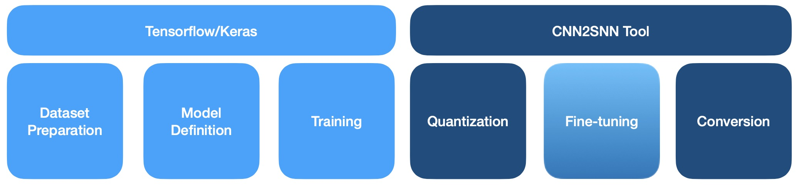

<!DOCTYPE html>
<html class="writer-html5" lang="en" >
<head>
  <meta charset="utf-8" /><meta name="generator" content="Docutils 0.17.1: http://docutils.sourceforge.net/" />

  <meta name="viewport" content="width=device-width, initial-scale=1.0" />
  <title>CNN conversion flow tutorial &mdash; Akida Examples  documentation</title>
      <link rel="stylesheet" href="../../_static/pygments.css" type="text/css" />
      <link rel="stylesheet" href="../../_static/css/theme.css" type="text/css" />
      <link rel="stylesheet" href="../../_static/sg_gallery.css" type="text/css" />
      <link rel="stylesheet" href="../../_static/sg_gallery-binder.css" type="text/css" />
      <link rel="stylesheet" href="../../_static/sg_gallery-dataframe.css" type="text/css" />
      <link rel="stylesheet" href="../../_static/sg_gallery-rendered-html.css" type="text/css" />
      <link rel="stylesheet" href="../../_static/custom.css" type="text/css" />
    <link rel="shortcut icon" href="../../_static/favicon.ico"/>
  <!--[if lt IE 9]>
    <script src="../../_static/js/html5shiv.min.js"></script>
  <![endif]-->
  
        <script data-url_root="../../" id="documentation_options" src="../../_static/documentation_options.js"></script>
        <script src="../../_static/jquery.js"></script>
        <script src="../../_static/underscore.js"></script>
        <script src="../../_static/doctools.js"></script>
    <script src="../../_static/js/theme.js"></script>
    <link rel="index" title="Index" href="../../genindex.html" />
    <link rel="search" title="Search" href="../../search.html" />
    <link rel="next" title="Advanced CNN2SNN tutorial" href="plot_1_advanced_cnn2snn.html" />
    <link rel="prev" title="YOLO/PASCAL-VOC detection tutorial" href="../general/plot_5_voc_yolo_detection.html" /> 
</head>

<body class="wy-body-for-nav"> 
  <div class="wy-grid-for-nav">
    <nav data-toggle="wy-nav-shift" class="wy-nav-side">
      <div class="wy-side-scroll">
        <div class="wy-side-nav-search"  style="background: #78b3ff" >
            <a href="../../index.html">
            
          </a>
              <div class="version">
                MetaTF 2.2.2
              </div>
<div role="search">
  <form id="rtd-search-form" class="wy-form" action="../../search.html" method="get">
    <input type="text" name="q" placeholder="Search docs" />
    <input type="hidden" name="check_keywords" value="yes" />
    <input type="hidden" name="area" value="default" />
  </form>
</div>
        </div><div class="wy-menu wy-menu-vertical" data-spy="affix" role="navigation" aria-label="Navigation menu">
              <ul class="current">
<li class="toctree-l1"><a class="reference internal" href="../../index.html">Overview</a></li>
<li class="toctree-l1"><a class="reference internal" href="../../installation.html">Installation</a><ul>
<li class="toctree-l2"><a class="reference internal" href="../../installation.html#requirements">Requirements</a></li>
<li class="toctree-l2"><a class="reference internal" href="../../installation.html#quick-installation">Quick installation</a></li>
<li class="toctree-l2"><a class="reference internal" href="../../installation.html#running-examples">Running examples</a></li>
</ul>
</li>
<li class="toctree-l1"><a class="reference internal" href="../../user_guide/user_guide.html">User guide</a><ul>
<li class="toctree-l2"><a class="reference internal" href="../../user_guide/getting_started.html">Getting started</a><ul>
<li class="toctree-l3"><a class="reference internal" href="../../user_guide/getting_started.html#for-beginners">For beginners</a></li>
<li class="toctree-l3"><a class="reference internal" href="../../user_guide/getting_started.html#for-users-familiar-with-deep-learning">For users familiar with deep-learning</a></li>
</ul>
</li>
<li class="toctree-l2"><a class="reference internal" href="../../user_guide/akida.html">Akida user guide</a><ul>
<li class="toctree-l3"><a class="reference internal" href="../../user_guide/akida.html#introduction">Introduction</a><ul>
<li class="toctree-l4"><a class="reference internal" href="../../user_guide/akida.html#akida-layers">Akida layers</a></li>
<li class="toctree-l4"><a class="reference internal" href="../../user_guide/akida.html#input-format">Input Format</a></li>
<li class="toctree-l4"><a class="reference internal" href="../../user_guide/akida.html#a-versatile-machine-learning-framework">A versatile machine learning framework</a></li>
</ul>
</li>
<li class="toctree-l3"><a class="reference internal" href="../../user_guide/akida.html#the-sequential-model">The Sequential model</a><ul>
<li class="toctree-l4"><a class="reference internal" href="../../user_guide/akida.html#specifying-the-model">Specifying the model</a></li>
<li class="toctree-l4"><a class="reference internal" href="../../user_guide/akida.html#accessing-layer-parameters-and-weights">Accessing layer parameters and weights</a></li>
<li class="toctree-l4"><a class="reference internal" href="../../user_guide/akida.html#inference">Inference</a></li>
<li class="toctree-l4"><a class="reference internal" href="../../user_guide/akida.html#saving-and-loading">Saving and loading</a></li>
<li class="toctree-l4"><a class="reference internal" href="../../user_guide/akida.html#input-layer-types">Input layer types</a></li>
<li class="toctree-l4"><a class="reference internal" href="../../user_guide/akida.html#data-processing-layer-types">Data-Processing layer types</a></li>
</ul>
</li>
<li class="toctree-l3"><a class="reference internal" href="../../user_guide/akida.html#model-hardware-mapping">Model Hardware Mapping</a><ul>
<li class="toctree-l4"><a class="reference internal" href="../../user_guide/akida.html#devices">Devices</a></li>
<li class="toctree-l4"><a class="reference internal" href="../../user_guide/akida.html#model-mapping">Model mapping</a></li>
<li class="toctree-l4"><a class="reference internal" href="../../user_guide/akida.html#advanced-mapping-details-and-hardware-devices-usage">Advanced Mapping Details and Hardware Devices Usage</a></li>
<li class="toctree-l4"><a class="reference internal" href="../../user_guide/akida.html#performances-measurement">Performances measurement</a></li>
</ul>
</li>
<li class="toctree-l3"><a class="reference internal" href="../../user_guide/akida.html#id1">Using Akida Edge learning</a><ul>
<li class="toctree-l4"><a class="reference internal" href="../../user_guide/akida.html#learning-constraints">Learning constraints</a></li>
<li class="toctree-l4"><a class="reference internal" href="../../user_guide/akida.html#compiling-a-layer">Compiling a layer</a></li>
</ul>
</li>
</ul>
</li>
<li class="toctree-l2"><a class="reference internal" href="../../user_guide/cnn2snn.html">CNN2SNN toolkit</a><ul>
<li class="toctree-l3"><a class="reference internal" href="../../user_guide/cnn2snn.html#overview">Overview</a><ul>
<li class="toctree-l4"><a class="reference internal" href="../../user_guide/cnn2snn.html#conversion-workflow">Conversion workflow</a></li>
<li class="toctree-l4"><a class="reference internal" href="../../user_guide/cnn2snn.html#typical-training-scenario">Typical training scenario</a></li>
<li class="toctree-l4"><a class="reference internal" href="../../user_guide/cnn2snn.html#design-compatibility-constraints">Design compatibility constraints</a></li>
<li class="toctree-l4"><a class="reference internal" href="../../user_guide/cnn2snn.html#quantization-compatibility-constraints">Quantization compatibility constraints</a></li>
<li class="toctree-l4"><a class="reference internal" href="../../user_guide/cnn2snn.html#command-line-interface">Command-line interface</a></li>
</ul>
</li>
<li class="toctree-l3"><a class="reference internal" href="../../user_guide/cnn2snn.html#layers-considerations">Layers Considerations</a><ul>
<li class="toctree-l4"><a class="reference internal" href="../../user_guide/cnn2snn.html#supported-layer-types">Supported layer types</a></li>
<li class="toctree-l4"><a class="reference internal" href="../../user_guide/cnn2snn.html#cnn2snn-quantization-aware-layers">CNN2SNN Quantization-aware layers</a></li>
<li class="toctree-l4"><a class="reference internal" href="../../user_guide/cnn2snn.html#training-only-layers">Training-Only Layers</a></li>
<li class="toctree-l4"><a class="reference internal" href="../../user_guide/cnn2snn.html#first-layers">First Layers</a></li>
<li class="toctree-l4"><a class="reference internal" href="../../user_guide/cnn2snn.html#id6">Final Layers</a></li>
</ul>
</li>
<li class="toctree-l3"><a class="reference internal" href="../../user_guide/cnn2snn.html#tips-and-tricks">Tips and Tricks</a></li>
</ul>
</li>
<li class="toctree-l2"><a class="reference internal" href="../../user_guide/akida_models.html">Akida models zoo</a><ul>
<li class="toctree-l3"><a class="reference internal" href="../../user_guide/akida_models.html#overview">Overview</a></li>
<li class="toctree-l3"><a class="reference internal" href="../../user_guide/akida_models.html#command-line-interface-for-model-creation">Command-line interface for model creation</a></li>
<li class="toctree-l3"><a class="reference internal" href="../../user_guide/akida_models.html#command-line-interface-for-model-training">Command-line interface for model training</a><ul>
<li class="toctree-l4"><a class="reference internal" href="../../user_guide/akida_models.html#utk-face-training">UTK Face training</a></li>
<li class="toctree-l4"><a class="reference internal" href="../../user_guide/akida_models.html#kws-training">KWS training</a></li>
<li class="toctree-l4"><a class="reference internal" href="../../user_guide/akida_models.html#yolo-training">YOLO training</a></li>
<li class="toctree-l4"><a class="reference internal" href="../../user_guide/akida_models.html#akidanet-training">AkidaNet training</a></li>
</ul>
</li>
<li class="toctree-l3"><a class="reference internal" href="../../user_guide/akida_models.html#command-line-interface-for-model-evaluation">Command-line interface for model evaluation</a></li>
<li class="toctree-l3"><a class="reference internal" href="../../user_guide/akida_models.html#id1">Layer Blocks</a><ul>
<li class="toctree-l4"><a class="reference internal" href="../../user_guide/akida_models.html#conv-block"><code class="docutils literal notranslate"><span class="pre">conv_block</span></code></a></li>
<li class="toctree-l4"><a class="reference internal" href="../../user_guide/akida_models.html#dense-block"><code class="docutils literal notranslate"><span class="pre">dense_block</span></code></a></li>
<li class="toctree-l4"><a class="reference internal" href="../../user_guide/akida_models.html#separable-conv-block"><code class="docutils literal notranslate"><span class="pre">separable_conv_block</span></code></a></li>
</ul>
</li>
</ul>
</li>
<li class="toctree-l2"><a class="reference internal" href="../../user_guide/hw_constraints.html">Hardware constraints</a><ul>
<li class="toctree-l3"><a class="reference internal" href="../../user_guide/hw_constraints.html#inputconvolutional">InputConvolutional</a></li>
<li class="toctree-l3"><a class="reference internal" href="../../user_guide/hw_constraints.html#convolutional">Convolutional</a></li>
<li class="toctree-l3"><a class="reference internal" href="../../user_guide/hw_constraints.html#separableconvolutional">SeparableConvolutional</a></li>
<li class="toctree-l3"><a class="reference internal" href="../../user_guide/hw_constraints.html#fullyconnected">FullyConnected</a></li>
</ul>
</li>
<li class="toctree-l2"><a class="reference internal" href="../../user_guide/compatibility.html">Akida versions compatibility</a><ul>
<li class="toctree-l3"><a class="reference internal" href="../../user_guide/compatibility.html#upgrading-models-with-legacy-quantizers">Upgrading models with legacy quantizers</a></li>
</ul>
</li>
</ul>
</li>
<li class="toctree-l1"><a class="reference internal" href="../../api_reference/api_reference.html">API reference</a><ul>
<li class="toctree-l2"><a class="reference internal" href="../../api_reference/akida_apis.html">Akida runtime</a><ul>
<li class="toctree-l3"><a class="reference internal" href="../../api_reference/akida_apis.html#model">Model</a></li>
<li class="toctree-l3"><a class="reference internal" href="../../api_reference/akida_apis.html#layer">Layer</a><ul>
<li class="toctree-l4"><a class="reference internal" href="../../api_reference/akida_apis.html#id1">Layer</a></li>
<li class="toctree-l4"><a class="reference internal" href="../../api_reference/akida_apis.html#mapping">Mapping</a></li>
</ul>
</li>
<li class="toctree-l3"><a class="reference internal" href="../../api_reference/akida_apis.html#inputdata">InputData</a></li>
<li class="toctree-l3"><a class="reference internal" href="../../api_reference/akida_apis.html#inputconvolutional">InputConvolutional</a></li>
<li class="toctree-l3"><a class="reference internal" href="../../api_reference/akida_apis.html#fullyconnected">FullyConnected</a></li>
<li class="toctree-l3"><a class="reference internal" href="../../api_reference/akida_apis.html#convolutional">Convolutional</a></li>
<li class="toctree-l3"><a class="reference internal" href="../../api_reference/akida_apis.html#separableconvolutional">SeparableConvolutional</a></li>
<li class="toctree-l3"><a class="reference internal" href="../../api_reference/akida_apis.html#layer-parameters">Layer parameters</a><ul>
<li class="toctree-l4"><a class="reference internal" href="../../api_reference/akida_apis.html#layertype">LayerType</a></li>
<li class="toctree-l4"><a class="reference internal" href="../../api_reference/akida_apis.html#padding">Padding</a></li>
<li class="toctree-l4"><a class="reference internal" href="../../api_reference/akida_apis.html#pooltype">PoolType</a></li>
<li class="toctree-l4"><a class="reference internal" href="../../api_reference/akida_apis.html#learningtype">LearningType</a></li>
</ul>
</li>
<li class="toctree-l3"><a class="reference internal" href="../../api_reference/akida_apis.html#sequence">Sequence</a><ul>
<li class="toctree-l4"><a class="reference internal" href="../../api_reference/akida_apis.html#id2">Sequence</a></li>
<li class="toctree-l4"><a class="reference internal" href="../../api_reference/akida_apis.html#backendtype">BackendType</a></li>
<li class="toctree-l4"><a class="reference internal" href="../../api_reference/akida_apis.html#pass">Pass</a></li>
</ul>
</li>
<li class="toctree-l3"><a class="reference internal" href="../../api_reference/akida_apis.html#device">Device</a><ul>
<li class="toctree-l4"><a class="reference internal" href="../../api_reference/akida_apis.html#id3">Device</a></li>
<li class="toctree-l4"><a class="reference internal" href="../../api_reference/akida_apis.html#hwversion">HwVersion</a></li>
</ul>
</li>
<li class="toctree-l3"><a class="reference internal" href="../../api_reference/akida_apis.html#hwdevice">HWDevice</a><ul>
<li class="toctree-l4"><a class="reference internal" href="../../api_reference/akida_apis.html#id4">HWDevice</a></li>
<li class="toctree-l4"><a class="reference internal" href="../../api_reference/akida_apis.html#socdriver">SocDriver</a></li>
<li class="toctree-l4"><a class="reference internal" href="../../api_reference/akida_apis.html#clockmode">ClockMode</a></li>
</ul>
</li>
<li class="toctree-l3"><a class="reference internal" href="../../api_reference/akida_apis.html#powermeter">PowerMeter</a></li>
<li class="toctree-l3"><a class="reference internal" href="../../api_reference/akida_apis.html#np">NP</a></li>
<li class="toctree-l3"><a class="reference internal" href="../../api_reference/akida_apis.html#tools">Tools</a><ul>
<li class="toctree-l4"><a class="reference internal" href="../../api_reference/akida_apis.html#sparsity">Sparsity</a></li>
<li class="toctree-l4"><a class="reference internal" href="../../api_reference/akida_apis.html#compatibility">Compatibility</a></li>
</ul>
</li>
</ul>
</li>
<li class="toctree-l2"><a class="reference internal" href="../../api_reference/cnn2snn_apis.html">CNN2SNN</a><ul>
<li class="toctree-l3"><a class="reference internal" href="../../api_reference/cnn2snn_apis.html#tool-functions">Tool functions</a><ul>
<li class="toctree-l4"><a class="reference internal" href="../../api_reference/cnn2snn_apis.html#quantize">quantize</a></li>
<li class="toctree-l4"><a class="reference internal" href="../../api_reference/cnn2snn_apis.html#quantize-layer">quantize_layer</a></li>
<li class="toctree-l4"><a class="reference internal" href="../../api_reference/cnn2snn_apis.html#convert">convert</a></li>
<li class="toctree-l4"><a class="reference internal" href="../../api_reference/cnn2snn_apis.html#check-model-compatibility">check_model_compatibility</a></li>
<li class="toctree-l4"><a class="reference internal" href="../../api_reference/cnn2snn_apis.html#load-quantized-model">load_quantized_model</a></li>
<li class="toctree-l4"><a class="reference internal" href="../../api_reference/cnn2snn_apis.html#transforms">Transforms</a></li>
<li class="toctree-l4"><a class="reference internal" href="../../api_reference/cnn2snn_apis.html#calibration">Calibration</a></li>
</ul>
</li>
<li class="toctree-l3"><a class="reference internal" href="../../api_reference/cnn2snn_apis.html#quantizers">Quantizers</a><ul>
<li class="toctree-l4"><a class="reference internal" href="../../api_reference/cnn2snn_apis.html#weightquantizer">WeightQuantizer</a></li>
<li class="toctree-l4"><a class="reference internal" href="../../api_reference/cnn2snn_apis.html#linearweightquantizer">LinearWeightQuantizer</a></li>
<li class="toctree-l4"><a class="reference internal" href="../../api_reference/cnn2snn_apis.html#stdweightquantizer">StdWeightQuantizer</a></li>
<li class="toctree-l4"><a class="reference internal" href="../../api_reference/cnn2snn_apis.html#stdperaxisquantizer">StdPerAxisQuantizer</a></li>
<li class="toctree-l4"><a class="reference internal" href="../../api_reference/cnn2snn_apis.html#maxquantizer">MaxQuantizer</a></li>
<li class="toctree-l4"><a class="reference internal" href="../../api_reference/cnn2snn_apis.html#maxperaxisquantizer">MaxPerAxisQuantizer</a></li>
</ul>
</li>
<li class="toctree-l3"><a class="reference internal" href="../../api_reference/cnn2snn_apis.html#quantized-layers">Quantized layers</a><ul>
<li class="toctree-l4"><a class="reference internal" href="../../api_reference/cnn2snn_apis.html#quantizedconv2d">QuantizedConv2D</a></li>
<li class="toctree-l4"><a class="reference internal" href="../../api_reference/cnn2snn_apis.html#quantizeddense">QuantizedDense</a></li>
<li class="toctree-l4"><a class="reference internal" href="../../api_reference/cnn2snn_apis.html#quantizedseparableconv2d">QuantizedSeparableConv2D</a></li>
<li class="toctree-l4"><a class="reference internal" href="../../api_reference/cnn2snn_apis.html#quantizedactivation">QuantizedActivation</a></li>
<li class="toctree-l4"><a class="reference internal" href="../../api_reference/cnn2snn_apis.html#activationdiscreterelu">ActivationDiscreteRelu</a></li>
<li class="toctree-l4"><a class="reference internal" href="../../api_reference/cnn2snn_apis.html#quantizedrelu">QuantizedReLU</a></li>
</ul>
</li>
</ul>
</li>
<li class="toctree-l2"><a class="reference internal" href="../../api_reference/akida_models_apis.html">Akida models</a><ul>
<li class="toctree-l3"><a class="reference internal" href="../../api_reference/akida_models_apis.html#layer-blocks">Layer blocks</a><ul>
<li class="toctree-l4"><a class="reference internal" href="../../api_reference/akida_models_apis.html#conv-block">conv_block</a></li>
<li class="toctree-l4"><a class="reference internal" href="../../api_reference/akida_models_apis.html#separable-conv-block">separable_conv_block</a></li>
<li class="toctree-l4"><a class="reference internal" href="../../api_reference/akida_models_apis.html#dense-block">dense_block</a></li>
</ul>
</li>
<li class="toctree-l3"><a class="reference internal" href="../../api_reference/akida_models_apis.html#helpers">Helpers</a><ul>
<li class="toctree-l4"><a class="reference internal" href="../../api_reference/akida_models_apis.html#batchnormalization-gamma-constraint">BatchNormalization gamma constraint</a></li>
</ul>
</li>
<li class="toctree-l3"><a class="reference internal" href="../../api_reference/akida_models_apis.html#knowledge-distillation">Knowledge distillation</a></li>
<li class="toctree-l3"><a class="reference internal" href="../../api_reference/akida_models_apis.html#pruning">Pruning</a></li>
<li class="toctree-l3"><a class="reference internal" href="../../api_reference/akida_models_apis.html#training">Training</a></li>
<li class="toctree-l3"><a class="reference internal" href="../../api_reference/akida_models_apis.html#model-zoo">Model zoo</a><ul>
<li class="toctree-l4"><a class="reference internal" href="../../api_reference/akida_models_apis.html#akidanet">AkidaNet</a></li>
<li class="toctree-l4"><a class="reference internal" href="../../api_reference/akida_models_apis.html#mobilenet">Mobilenet</a></li>
<li class="toctree-l4"><a class="reference internal" href="../../api_reference/akida_models_apis.html#ds-cnn">DS-CNN</a></li>
<li class="toctree-l4"><a class="reference internal" href="../../api_reference/akida_models_apis.html#vgg">VGG</a></li>
<li class="toctree-l4"><a class="reference internal" href="../../api_reference/akida_models_apis.html#yolo">YOLO</a></li>
<li class="toctree-l4"><a class="reference internal" href="../../api_reference/akida_models_apis.html#convtiny">ConvTiny</a></li>
<li class="toctree-l4"><a class="reference internal" href="../../api_reference/akida_models_apis.html#pointnet">PointNet++</a></li>
<li class="toctree-l4"><a class="reference internal" href="../../api_reference/akida_models_apis.html#gxnor">GXNOR</a></li>
</ul>
</li>
</ul>
</li>
</ul>
</li>
<li class="toctree-l1 current"><a class="reference internal" href="../index.html">Examples</a><ul class="current">
<li class="toctree-l2"><a class="reference internal" href="../index.html#general-examples">General examples</a><ul>
<li class="toctree-l3"><a class="reference internal" href="../general/plot_0_gxnor_mnist.html">GXNOR/MNIST inference</a><ul>
<li class="toctree-l4"><a class="reference internal" href="../general/plot_0_gxnor_mnist.html#dataset-preparation">1. Dataset preparation</a></li>
<li class="toctree-l4"><a class="reference internal" href="../general/plot_0_gxnor_mnist.html#create-a-keras-gxnor-model">2. Create a Keras GXNOR model</a></li>
<li class="toctree-l4"><a class="reference internal" href="../general/plot_0_gxnor_mnist.html#conversion-to-akida">3. Conversion to Akida</a></li>
</ul>
</li>
<li class="toctree-l3"><a class="reference internal" href="../general/plot_1_akidanet_imagenet.html">AkidaNet/ImageNet inference</a><ul>
<li class="toctree-l4"><a class="reference internal" href="../general/plot_1_akidanet_imagenet.html#dataset-preparation">1. Dataset preparation</a></li>
<li class="toctree-l4"><a class="reference internal" href="../general/plot_1_akidanet_imagenet.html#create-a-keras-akidanet-model">2. Create a Keras AkidaNet model</a></li>
<li class="toctree-l4"><a class="reference internal" href="../general/plot_1_akidanet_imagenet.html#quantized-model">3. Quantized model</a></li>
<li class="toctree-l4"><a class="reference internal" href="../general/plot_1_akidanet_imagenet.html#pretrained-quantized-model">4. Pretrained quantized model</a></li>
<li class="toctree-l4"><a class="reference internal" href="../general/plot_1_akidanet_imagenet.html#conversion-to-akida">5. Conversion to Akida</a></li>
<li class="toctree-l4"><a class="reference internal" href="../general/plot_1_akidanet_imagenet.html#hardware-mapping-and-performance">6. Hardware mapping and performance</a></li>
</ul>
</li>
<li class="toctree-l3"><a class="reference internal" href="../general/plot_2_ds_cnn_kws.html">DS-CNN/KWS inference</a><ul>
<li class="toctree-l4"><a class="reference internal" href="../general/plot_2_ds_cnn_kws.html#load-the-preprocessed-dataset">1. Load the preprocessed dataset</a></li>
<li class="toctree-l4"><a class="reference internal" href="../general/plot_2_ds_cnn_kws.html#load-a-pre-trained-native-keras-model">2. Load a pre-trained native Keras model</a></li>
<li class="toctree-l4"><a class="reference internal" href="../general/plot_2_ds_cnn_kws.html#load-a-pre-trained-quantized-keras-model-satisfying-akida-nsoc-requirements">3. Load a pre-trained quantized Keras model satisfying Akida NSoC requirements</a></li>
<li class="toctree-l4"><a class="reference internal" href="../general/plot_2_ds_cnn_kws.html#conversion-to-akida">4. Conversion to Akida</a></li>
<li class="toctree-l4"><a class="reference internal" href="../general/plot_2_ds_cnn_kws.html#confusion-matrix">5. Confusion matrix</a></li>
</ul>
</li>
<li class="toctree-l3"><a class="reference internal" href="../general/plot_3_regression.html">Regression tutorial</a><ul>
<li class="toctree-l4"><a class="reference internal" href="../general/plot_3_regression.html#load-the-dataset">1. Load the dataset</a></li>
<li class="toctree-l4"><a class="reference internal" href="../general/plot_3_regression.html#load-a-pre-trained-native-keras-model">2. Load a pre-trained native Keras model</a></li>
<li class="toctree-l4"><a class="reference internal" href="../general/plot_3_regression.html#load-a-pre-trained-quantized-keras-model-satisfying-akida-nsoc-requirements">3. Load a pre-trained quantized Keras model satisfying Akida NSoC requirements</a></li>
<li class="toctree-l4"><a class="reference internal" href="../general/plot_3_regression.html#conversion-to-akida">4. Conversion to Akida</a></li>
<li class="toctree-l4"><a class="reference internal" href="../general/plot_3_regression.html#estimate-age-on-a-single-image">5. Estimate age on a single image</a></li>
</ul>
</li>
<li class="toctree-l3"><a class="reference internal" href="../general/plot_4_transfer_learning.html">Transfer learning with AkidaNet for PlantVillage</a><ul>
<li class="toctree-l4"><a class="reference internal" href="../general/plot_4_transfer_learning.html#transfer-learning-process">Transfer learning process</a></li>
<li class="toctree-l4"><a class="reference internal" href="../general/plot_4_transfer_learning.html#dataset-preparation">1. Dataset preparation</a></li>
<li class="toctree-l4"><a class="reference internal" href="../general/plot_4_transfer_learning.html#get-a-trained-akidanet-base-model">2. Get a trained AkidaNet base model</a></li>
<li class="toctree-l4"><a class="reference internal" href="../general/plot_4_transfer_learning.html#add-a-float-classification-head-to-the-model">3. Add a float classification head to the model</a></li>
<li class="toctree-l4"><a class="reference internal" href="../general/plot_4_transfer_learning.html#freeze-the-base-model">4. Freeze the base model</a></li>
<li class="toctree-l4"><a class="reference internal" href="../general/plot_4_transfer_learning.html#train-for-a-few-epochs">5. Train for a few epochs</a></li>
<li class="toctree-l4"><a class="reference internal" href="../general/plot_4_transfer_learning.html#quantize-the-classification-head">6. Quantize the classification head</a></li>
<li class="toctree-l4"><a class="reference internal" href="../general/plot_4_transfer_learning.html#compute-accuracy">7. Compute accuracy</a></li>
</ul>
</li>
<li class="toctree-l3"><a class="reference internal" href="../general/plot_5_voc_yolo_detection.html">YOLO/PASCAL-VOC detection tutorial</a><ul>
<li class="toctree-l4"><a class="reference internal" href="../general/plot_5_voc_yolo_detection.html#introduction">1. Introduction</a></li>
<li class="toctree-l4"><a class="reference internal" href="../general/plot_5_voc_yolo_detection.html#preprocessing-tools">2. Preprocessing tools</a></li>
<li class="toctree-l4"><a class="reference internal" href="../general/plot_5_voc_yolo_detection.html#model-architecture">3. Model architecture</a></li>
<li class="toctree-l4"><a class="reference internal" href="../general/plot_5_voc_yolo_detection.html#training">4. Training</a></li>
<li class="toctree-l4"><a class="reference internal" href="../general/plot_5_voc_yolo_detection.html#performance">5. Performance</a></li>
<li class="toctree-l4"><a class="reference internal" href="../general/plot_5_voc_yolo_detection.html#conversion-to-akida">6. Conversion to Akida</a></li>
</ul>
</li>
</ul>
</li>
<li class="toctree-l2 current"><a class="reference internal" href="../index.html#cnn2snn-tutorials">CNN2SNN tutorials</a><ul class="current">
<li class="toctree-l3 current"><a class="current reference internal" href="#">CNN conversion flow tutorial</a><ul>
<li class="toctree-l4"><a class="reference internal" href="#load-and-reshape-mnist-dataset">1. Load and reshape MNIST dataset</a></li>
<li class="toctree-l4"><a class="reference internal" href="#model-definition">2. Model definition</a></li>
<li class="toctree-l4"><a class="reference internal" href="#model-training">3. Model training</a></li>
<li class="toctree-l4"><a class="reference internal" href="#model-quantization">4. Model quantization</a></li>
<li class="toctree-l4"><a class="reference internal" href="#model-fine-tuning-quantization-aware-training">5. Model fine tuning (quantization-aware training)</a></li>
<li class="toctree-l4"><a class="reference internal" href="#model-conversion">6. Model conversion</a></li>
</ul>
</li>
<li class="toctree-l3"><a class="reference internal" href="plot_1_advanced_cnn2snn.html">Advanced CNN2SNN tutorial</a><ul>
<li class="toctree-l4"><a class="reference internal" href="plot_1_advanced_cnn2snn.html#design-a-cnn2snn-quantized-model">1. Design a CNN2SNN quantized model</a></li>
<li class="toctree-l4"><a class="reference internal" href="plot_1_advanced_cnn2snn.html#weight-quantizer-details">2. Weight Quantizer Details</a></li>
<li class="toctree-l4"><a class="reference internal" href="plot_1_advanced_cnn2snn.html#understanding-quantized-activation">3. Understanding quantized activation</a></li>
<li class="toctree-l4"><a class="reference internal" href="plot_1_advanced_cnn2snn.html#how-to-deal-with-too-high-scale-factors">4. How to deal with too high scale factors</a></li>
</ul>
</li>
</ul>
</li>
<li class="toctree-l2"><a class="reference internal" href="../index.html#edge-examples">Edge examples</a><ul>
<li class="toctree-l3"><a class="reference internal" href="../edge/plot_0_edge_learning_vision.html">Akida vision edge learning</a><ul>
<li class="toctree-l4"><a class="reference internal" href="../edge/plot_0_edge_learning_vision.html#dataset-preparation">1. Dataset preparation</a></li>
<li class="toctree-l4"><a class="reference internal" href="../edge/plot_0_edge_learning_vision.html#prepare-akida-model-for-learning">2. Prepare Akida model for learning</a></li>
<li class="toctree-l4"><a class="reference internal" href="../edge/plot_0_edge_learning_vision.html#edge-learning-with-akida">3. Edge learning with Akida</a></li>
</ul>
</li>
<li class="toctree-l3"><a class="reference internal" href="../edge/plot_1_edge_learning_kws.html">Akida edge learning for keyword spotting</a><ul>
<li class="toctree-l4"><a class="reference internal" href="../edge/plot_1_edge_learning_kws.html#edge-learning-process">1. Edge learning process</a></li>
<li class="toctree-l4"><a class="reference internal" href="../edge/plot_1_edge_learning_kws.html#dataset-preparation">2. Dataset preparation</a></li>
<li class="toctree-l4"><a class="reference internal" href="../edge/plot_1_edge_learning_kws.html#prepare-akida-model-for-learning">3. Prepare Akida model for learning</a></li>
<li class="toctree-l4"><a class="reference internal" href="../edge/plot_1_edge_learning_kws.html#learn-with-akida-using-the-training-set">4. Learn with Akida using the training set</a></li>
<li class="toctree-l4"><a class="reference internal" href="../edge/plot_1_edge_learning_kws.html#edge-learning">5. Edge learning</a></li>
</ul>
</li>
<li class="toctree-l3"><a class="reference internal" href="../edge/plot_2_edge_learning_parameters.html">Tips to set Akida learning parameters</a><ul>
<li class="toctree-l4"><a class="reference internal" href="../edge/plot_2_edge_learning_parameters.html#akida-learning-parameters">1. Akida learning parameters</a></li>
<li class="toctree-l4"><a class="reference internal" href="../edge/plot_2_edge_learning_parameters.html#create-akida-model">2. Create Akida model</a></li>
<li class="toctree-l4"><a class="reference internal" href="../edge/plot_2_edge_learning_parameters.html#estimate-the-required-number-of-weights-of-the-trainable-layer">3. Estimate the required number of weights of the trainable layer</a></li>
<li class="toctree-l4"><a class="reference internal" href="../edge/plot_2_edge_learning_parameters.html#estimate-the-number-of-neurons-per-class">4. Estimate the number of neurons per class</a></li>
</ul>
</li>
</ul>
</li>
</ul>
</li>
<li class="toctree-l1"><a class="reference internal" href="../../zoo_performances.html">Model zoo performances</a><ul>
<li class="toctree-l2"><a class="reference internal" href="../../zoo_performances.html#image-icon-ref-image-domain"> Image domain</a><ul>
<li class="toctree-l3"><a class="reference internal" href="../../zoo_performances.html#classification">Classification</a></li>
<li class="toctree-l3"><a class="reference internal" href="../../zoo_performances.html#object-detection">Object detection</a></li>
<li class="toctree-l3"><a class="reference internal" href="../../zoo_performances.html#regression">Regression</a></li>
<li class="toctree-l3"><a class="reference internal" href="../../zoo_performances.html#face-recognition">Face recognition</a></li>
</ul>
</li>
<li class="toctree-l2"><a class="reference internal" href="../../zoo_performances.html#audio-icon-ref-audio-domain"> Audio domain</a><ul>
<li class="toctree-l3"><a class="reference internal" href="../../zoo_performances.html#keyword-spotting">Keyword spotting</a></li>
</ul>
</li>
<li class="toctree-l2"><a class="reference internal" href="../../zoo_performances.html#time-icon-ref-time-domain"> Time domain</a><ul>
<li class="toctree-l3"><a class="reference internal" href="../../zoo_performances.html#fault-detection">Fault detection</a></li>
<li class="toctree-l3"><a class="reference internal" href="../../zoo_performances.html#id1">Classification</a></li>
</ul>
</li>
<li class="toctree-l2"><a class="reference internal" href="../../zoo_performances.html#pointcloud-icon-ref-point-cloud"> Point cloud</a><ul>
<li class="toctree-l3"><a class="reference internal" href="../../zoo_performances.html#id2">Classification</a></li>
</ul>
</li>
</ul>
</li>
<li class="toctree-l1"><a class="reference external" href="https://github.com/Brainchip-Inc/akida_examples/releases">Changelog</a></li>
<li class="toctree-l1"><a class="reference external" href="https://support.brainchip.com/portal/home">Support</a></li>
<li class="toctree-l1"><a class="reference internal" href="../../license.html">License</a></li>
</ul>

        </div>
      </div>
    </nav>

    <section data-toggle="wy-nav-shift" class="wy-nav-content-wrap"><nav class="wy-nav-top" aria-label="Mobile navigation menu"  style="background: #78b3ff" >
          <i data-toggle="wy-nav-top" class="fa fa-bars"></i>
          <a href="../../index.html">Akida Examples</a>
      </nav>

      <div class="wy-nav-content">
        <div class="rst-content">
          <div role="navigation" aria-label="Page navigation">
  <ul class="wy-breadcrumbs">
      <li><a href="../../index.html" class="icon icon-home"></a> &raquo;</li>
          <li><a href="../index.html">Akida examples</a> &raquo;</li>
      <li>CNN conversion flow tutorial</li>
      <li class="wy-breadcrumbs-aside">
      </li>
  </ul>
  <hr/>
</div>
          <div role="main" class="document" itemscope="itemscope" itemtype="http://schema.org/Article">
           <div itemprop="articleBody">
             
  <div class="sphx-glr-download-link-note admonition note">
<p class="admonition-title">Note</p>
<p>Click <a class="reference internal" href="#sphx-glr-download-examples-cnn2snn-plot-0-cnn-flow-py"><span class="std std-ref">here</span></a>
to download the full example code</p>
</div>
<section class="sphx-glr-example-title" id="cnn-conversion-flow-tutorial">
<span id="sphx-glr-examples-cnn2snn-plot-0-cnn-flow-py"></span><h1>CNN conversion flow tutorial<a class="headerlink" href="#cnn-conversion-flow-tutorial" title="Permalink to this headline"></a></h1>
<p>This tutorial illustrates how to use the CNN2SNN toolkit to <strong>convert CNN
networks to SNN networks</strong> compatible with the <strong>Akida NSoC</strong> in a few steps.
You can refer to our <a class="reference external" href="../../user_guide/cnn2snn.html">CNN2SNN toolkit user guide</a> for further
explanation.</p>
<p>The CNN2SNN tool is based on Keras, TensorFlow high-level API for building and
training deep learning models.</p>
<div class="admonition note">
<p class="admonition-title">Note</p>
<p>Please refer to TensorFlow  <a class="reference external" href="https://www.tensorflow.org/api_docs/python/tf/keras/models">tf.keras.models</a>
module for model creation/import details and <a class="reference external" href="https://www.tensorflow.org/guide">TensorFlow
Guide</a> for details of how
TensorFlow works.</p>
<p>MNIST example below is light enough so you do not need a <a class="reference external" href="https://www.tensorflow.org/install/gpu">GPU</a> to run the CNN2SNN
tool.</p>
</div>
<a class="reference internal image-reference" href="../../_images/cnn2snn_flow_small.jpg"></a>
<section id="load-and-reshape-mnist-dataset">
<h2>1. Load and reshape MNIST dataset<a class="headerlink" href="#load-and-reshape-mnist-dataset" title="Permalink to this headline"></a></h2>
<p>After loading, we make 2 transformations on the dataset:</p>
<ol class="arabic simple">
<li><p>Reshape the sample content data (x values) into a num_samples x width x
height x channels matrix.</p></li>
</ol>
<div class="admonition note">
<p class="admonition-title">Note</p>
<p>At this point, we’ll set aside the raw data for testing our
converted model in the Akida runtime later.</p>
</div>
<ol class="arabic simple" start="2">
<li><p>Rescale the 8-bit loaded data to the range 0-to-1 for training.</p></li>
</ol>
<div class="admonition note">
<p class="admonition-title">Note</p>
<p>Input data normalization is a common step dealing with CNN
(rationale is to keep data in a range that works with selected
optimizers, some reading can be found
<a class="reference external" href="https://www.jeremyjordan.me/batch-normalization/">here</a>.</p>
<p>This shift makes almost no difference in the current example, but
for some datasets rescaling the absolute values (and also shifting
to zero-mean) can make a really major difference.</p>
<p>Also note that we store the scaling values <code class="docutils literal notranslate"><span class="pre">input_scaling</span></code> for
use when preparing the model for the Akida neuromorphic IP. The
implementation of the Akida neural network allows us to completely
skip the rescaling step (i.e. the Akida model should be fed with
the raw 8-bit values) but that does require information about what
scaling was applied prior to training - see below for more details.</p>
</div>
<div class="highlight-default notranslate"><div class="highlight"><pre><span></span><span class="kn">from</span> <span class="nn">tensorflow</span> <span class="kn">import</span> <span class="n">keras</span>

<span class="c1"># Load MNIST dataset</span>
<span class="p">(</span><span class="n">x_train</span><span class="p">,</span> <span class="n">y_train</span><span class="p">),</span> <span class="p">(</span><span class="n">x_test</span><span class="p">,</span> <span class="n">y_test</span><span class="p">)</span> <span class="o">=</span> <span class="n">keras</span><span class="o">.</span><span class="n">datasets</span><span class="o">.</span><span class="n">mnist</span><span class="o">.</span><span class="n">load_data</span><span class="p">()</span>

<span class="c1"># Reshape x-data</span>
<span class="n">x_train</span> <span class="o">=</span> <span class="n">x_train</span><span class="o">.</span><span class="n">reshape</span><span class="p">(</span><span class="mi">60000</span><span class="p">,</span> <span class="mi">28</span><span class="p">,</span> <span class="mi">28</span><span class="p">,</span> <span class="mi">1</span><span class="p">)</span>
<span class="n">x_test</span> <span class="o">=</span> <span class="n">x_test</span><span class="o">.</span><span class="n">reshape</span><span class="p">(</span><span class="mi">10000</span><span class="p">,</span> <span class="mi">28</span><span class="p">,</span> <span class="mi">28</span><span class="p">,</span> <span class="mi">1</span><span class="p">)</span>

<span class="c1"># Set aside raw test data for use with Akida runtime later</span>
<span class="n">raw_x_test</span> <span class="o">=</span> <span class="n">x_test</span><span class="o">.</span><span class="n">astype</span><span class="p">(</span><span class="s1">&#39;uint8&#39;</span><span class="p">)</span>
<span class="n">raw_y_test</span> <span class="o">=</span> <span class="n">y_test</span>

<span class="c1"># Rescale x-data</span>
<span class="n">a</span> <span class="o">=</span> <span class="mi">255</span>
<span class="n">b</span> <span class="o">=</span> <span class="mi">0</span>
<span class="n">input_scaling</span> <span class="o">=</span> <span class="p">(</span><span class="n">a</span><span class="p">,</span> <span class="n">b</span><span class="p">)</span>
<span class="n">x_train</span> <span class="o">=</span> <span class="n">x_train</span><span class="o">.</span><span class="n">astype</span><span class="p">(</span><span class="s1">&#39;float32&#39;</span><span class="p">)</span>
<span class="n">x_test</span> <span class="o">=</span> <span class="n">x_test</span><span class="o">.</span><span class="n">astype</span><span class="p">(</span><span class="s1">&#39;float32&#39;</span><span class="p">)</span>
<span class="n">x_train</span> <span class="o">=</span> <span class="p">(</span><span class="n">x_train</span> <span class="o">-</span> <span class="n">b</span><span class="p">)</span> <span class="o">/</span> <span class="n">a</span>
<span class="n">x_test</span> <span class="o">=</span> <span class="p">(</span><span class="n">x_test</span> <span class="o">-</span> <span class="n">b</span><span class="p">)</span> <span class="o">/</span> <span class="n">a</span>
</pre></div>
</div>
</section>
<section id="model-definition">
<h2>2. Model definition<a class="headerlink" href="#model-definition" title="Permalink to this headline"></a></h2>
<p>Note that at this stage, there is nothing specific to the Akida NSoC.
This start point is very much a completely standard CNN as defined
within <a class="reference external" href="https://www.tensorflow.org/api_docs/python/tf/keras">Keras</a>.</p>
<p>An appropriate model for MNIST (inspired by <a class="reference external" href="https://www.tensorflow.org/model_optimization/guide/quantization/training_example#train_a_model_for_mnist_without_quantization_aware_training">this
example</a>)
might look something like the following:</p>
<div class="highlight-default notranslate"><div class="highlight"><pre><span></span><span class="n">model_keras</span> <span class="o">=</span> <span class="n">keras</span><span class="o">.</span><span class="n">models</span><span class="o">.</span><span class="n">Sequential</span><span class="p">([</span>
    <span class="n">keras</span><span class="o">.</span><span class="n">layers</span><span class="o">.</span><span class="n">Conv2D</span><span class="p">(</span>
        <span class="n">filters</span><span class="o">=</span><span class="mi">32</span><span class="p">,</span> <span class="n">kernel_size</span><span class="o">=</span><span class="mi">3</span><span class="p">,</span> <span class="n">input_shape</span><span class="o">=</span><span class="p">(</span><span class="mi">28</span><span class="p">,</span> <span class="mi">28</span><span class="p">,</span> <span class="mi">1</span><span class="p">),</span> <span class="n">strides</span><span class="o">=</span><span class="mi">2</span><span class="p">),</span>
    <span class="n">keras</span><span class="o">.</span><span class="n">layers</span><span class="o">.</span><span class="n">BatchNormalization</span><span class="p">(),</span>
    <span class="n">keras</span><span class="o">.</span><span class="n">layers</span><span class="o">.</span><span class="n">ReLU</span><span class="p">(),</span>
    <span class="n">keras</span><span class="o">.</span><span class="n">layers</span><span class="o">.</span><span class="n">SeparableConv2D</span><span class="p">(</span>
        <span class="n">filters</span><span class="o">=</span><span class="mi">64</span><span class="p">,</span> <span class="n">kernel_size</span><span class="o">=</span><span class="mi">3</span><span class="p">,</span> <span class="n">padding</span><span class="o">=</span><span class="s1">&#39;same&#39;</span><span class="p">,</span> <span class="n">strides</span><span class="o">=</span><span class="mi">2</span><span class="p">),</span>
    <span class="n">keras</span><span class="o">.</span><span class="n">layers</span><span class="o">.</span><span class="n">BatchNormalization</span><span class="p">(),</span>
    <span class="n">keras</span><span class="o">.</span><span class="n">layers</span><span class="o">.</span><span class="n">ReLU</span><span class="p">(),</span>
    <span class="n">keras</span><span class="o">.</span><span class="n">layers</span><span class="o">.</span><span class="n">Flatten</span><span class="p">(),</span>
    <span class="n">keras</span><span class="o">.</span><span class="n">layers</span><span class="o">.</span><span class="n">Dense</span><span class="p">(</span><span class="mi">10</span><span class="p">)</span>
<span class="p">],</span> <span class="s1">&#39;mnistnet&#39;</span><span class="p">)</span>

<span class="n">model_keras</span><span class="o">.</span><span class="n">summary</span><span class="p">()</span>
</pre></div>
</div>
<p class="sphx-glr-script-out">Out:</p>
<div class="sphx-glr-script-out highlight-none notranslate"><div class="highlight"><pre><span></span>Model: &quot;mnistnet&quot;
_________________________________________________________________
 Layer (type)                Output Shape              Param #
=================================================================
 conv2d (Conv2D)             (None, 13, 13, 32)        320

 batch_normalization (BatchN  (None, 13, 13, 32)       128
 ormalization)

 re_lu (ReLU)                (None, 13, 13, 32)        0

 separable_conv2d (Separable  (None, 7, 7, 64)         2400
 Conv2D)

 batch_normalization_1 (Batc  (None, 7, 7, 64)         256
 hNormalization)

 re_lu_1 (ReLU)              (None, 7, 7, 64)          0

 flatten (Flatten)           (None, 3136)              0

 dense (Dense)               (None, 10)                31370

=================================================================
Total params: 34,474
Trainable params: 34,282
Non-trainable params: 192
_________________________________________________________________
</pre></div>
</div>
<p>The model defined above is compatible for conversion into an Akida model, i.e.
the model doesn’t include any layers or operations that aren’t Akida-compatible
(please refer to the <a class="reference external" href="../../user_guide/cnn2snn.html">CNN2SNN toolkit</a> documentation for full
details):</p>
<ul class="simple">
<li><p>Standard Conv2D and Dense layers are supported</p></li>
<li><p>Hidden layers must be followed  by a ReLU layer.</p></li>
<li><p>BatchNormalization must always happen before activations.</p></li>
<li><p>Convolutional blocks can optionally be followed by a MaxPooling.</p></li>
</ul>
<p>The CNN2SNN toolkit provides the
<a class="reference external" href="../../api_reference/cnn2snn_apis.html#check-model-compatibility">check_model_compatibility</a>
function to ensure that the model can be converted into an Akida model. If
the model is not fully compatible, substitutes will be needed for the
relevant layers/operations (guidelines included in the documentation).</p>
<div class="highlight-default notranslate"><div class="highlight"><pre><span></span><span class="kn">from</span> <span class="nn">cnn2snn</span> <span class="kn">import</span> <span class="n">check_model_compatibility</span>

<span class="nb">print</span><span class="p">(</span><span class="s2">&quot;Model compatible for Akida conversion:&quot;</span><span class="p">,</span>
      <span class="n">check_model_compatibility</span><span class="p">(</span><span class="n">model_keras</span><span class="p">))</span>
</pre></div>
</div>
<p class="sphx-glr-script-out">Out:</p>
<div class="sphx-glr-script-out highlight-none notranslate"><div class="highlight"><pre><span></span>Model compatible for Akida conversion: True
</pre></div>
</div>
</section>
<section id="model-training">
<h2>3. Model training<a class="headerlink" href="#model-training" title="Permalink to this headline"></a></h2>
<p>Before going any further, train the model and get its performance.
The created model should have achieved a test accuracy over 98% after 10
epochs.</p>
<div class="highlight-default notranslate"><div class="highlight"><pre><span></span><span class="n">model_keras</span><span class="o">.</span><span class="n">compile</span><span class="p">(</span>
    <span class="n">loss</span><span class="o">=</span><span class="n">keras</span><span class="o">.</span><span class="n">losses</span><span class="o">.</span><span class="n">SparseCategoricalCrossentropy</span><span class="p">(</span><span class="n">from_logits</span><span class="o">=</span><span class="kc">True</span><span class="p">),</span>
    <span class="n">optimizer</span><span class="o">=</span><span class="s1">&#39;adam&#39;</span><span class="p">,</span>
    <span class="n">metrics</span><span class="o">=</span><span class="p">[</span><span class="s1">&#39;accuracy&#39;</span><span class="p">])</span>

<span class="n">model_keras</span><span class="o">.</span><span class="n">fit</span><span class="p">(</span><span class="n">x_train</span><span class="p">,</span> <span class="n">y_train</span><span class="p">,</span> <span class="n">epochs</span><span class="o">=</span><span class="mi">10</span><span class="p">,</span> <span class="n">validation_split</span><span class="o">=</span><span class="mf">0.1</span><span class="p">)</span>

<span class="n">score</span> <span class="o">=</span> <span class="n">model_keras</span><span class="o">.</span><span class="n">evaluate</span><span class="p">(</span><span class="n">x_test</span><span class="p">,</span> <span class="n">y_test</span><span class="p">,</span> <span class="n">verbose</span><span class="o">=</span><span class="mi">0</span><span class="p">)</span>
<span class="nb">print</span><span class="p">(</span><span class="s1">&#39;Test accuracy:&#39;</span><span class="p">,</span> <span class="n">score</span><span class="p">[</span><span class="mi">1</span><span class="p">])</span>
</pre></div>
</div>
<p class="sphx-glr-script-out">Out:</p>
<div class="sphx-glr-script-out highlight-none notranslate"><div class="highlight"><pre><span></span>Epoch 1/10

   1/1688 [..............................] - ETA: 11:45 - loss: 2.5367 - accuracy: 0.1250
  30/1688 [..............................] - ETA: 2s - loss: 1.2975 - accuracy: 0.5719   
  58/1688 [&gt;.............................] - ETA: 2s - loss: 0.9289 - accuracy: 0.7015
  86/1688 [&gt;.............................] - ETA: 2s - loss: 0.7772 - accuracy: 0.7511
 114/1688 [=&gt;............................] - ETA: 2s - loss: 0.6764 - accuracy: 0.7840
 142/1688 [=&gt;............................] - ETA: 2s - loss: 0.6043 - accuracy: 0.8090
 170/1688 [==&gt;...........................] - ETA: 2s - loss: 0.5456 - accuracy: 0.8279
 198/1688 [==&gt;...........................] - ETA: 2s - loss: 0.5070 - accuracy: 0.8403
 227/1688 [===&gt;..........................] - ETA: 2s - loss: 0.4734 - accuracy: 0.8513
 256/1688 [===&gt;..........................] - ETA: 2s - loss: 0.4488 - accuracy: 0.8589
 284/1688 [====&gt;.........................] - ETA: 2s - loss: 0.4253 - accuracy: 0.8675
 312/1688 [====&gt;.........................] - ETA: 2s - loss: 0.4056 - accuracy: 0.8743
 340/1688 [=====&gt;........................] - ETA: 2s - loss: 0.3915 - accuracy: 0.8795
 368/1688 [=====&gt;........................] - ETA: 2s - loss: 0.3758 - accuracy: 0.8843
 395/1688 [======&gt;.......................] - ETA: 2s - loss: 0.3595 - accuracy: 0.8887
 423/1688 [======&gt;.......................] - ETA: 2s - loss: 0.3479 - accuracy: 0.8920
 452/1688 [=======&gt;......................] - ETA: 2s - loss: 0.3370 - accuracy: 0.8958
 480/1688 [=======&gt;......................] - ETA: 2s - loss: 0.3281 - accuracy: 0.8988
 509/1688 [========&gt;.....................] - ETA: 2s - loss: 0.3195 - accuracy: 0.9018
 537/1688 [========&gt;.....................] - ETA: 2s - loss: 0.3113 - accuracy: 0.9044
 565/1688 [=========&gt;....................] - ETA: 2s - loss: 0.3025 - accuracy: 0.9068
 593/1688 [=========&gt;....................] - ETA: 1s - loss: 0.2939 - accuracy: 0.9090
 621/1688 [==========&gt;...................] - ETA: 1s - loss: 0.2883 - accuracy: 0.9108
 650/1688 [==========&gt;...................] - ETA: 1s - loss: 0.2821 - accuracy: 0.9129
 678/1688 [===========&gt;..................] - ETA: 1s - loss: 0.2753 - accuracy: 0.9152
 706/1688 [===========&gt;..................] - ETA: 1s - loss: 0.2686 - accuracy: 0.9174
 734/1688 [============&gt;.................] - ETA: 1s - loss: 0.2626 - accuracy: 0.9192
 762/1688 [============&gt;.................] - ETA: 1s - loss: 0.2575 - accuracy: 0.9209
 791/1688 [=============&gt;................] - ETA: 1s - loss: 0.2515 - accuracy: 0.9226
 819/1688 [=============&gt;................] - ETA: 1s - loss: 0.2463 - accuracy: 0.9240
 847/1688 [==============&gt;...............] - ETA: 1s - loss: 0.2437 - accuracy: 0.9249
 876/1688 [==============&gt;...............] - ETA: 1s - loss: 0.2391 - accuracy: 0.9264
 904/1688 [===============&gt;..............] - ETA: 1s - loss: 0.2345 - accuracy: 0.9278
 932/1688 [===============&gt;..............] - ETA: 1s - loss: 0.2307 - accuracy: 0.9291
 961/1688 [================&gt;.............] - ETA: 1s - loss: 0.2281 - accuracy: 0.9303
 989/1688 [================&gt;.............] - ETA: 1s - loss: 0.2246 - accuracy: 0.9311
1018/1688 [=================&gt;............] - ETA: 1s - loss: 0.2216 - accuracy: 0.9320
1047/1688 [=================&gt;............] - ETA: 1s - loss: 0.2187 - accuracy: 0.9331
1076/1688 [==================&gt;...........] - ETA: 1s - loss: 0.2151 - accuracy: 0.9340
1104/1688 [==================&gt;...........] - ETA: 1s - loss: 0.2120 - accuracy: 0.9349
1133/1688 [===================&gt;..........] - ETA: 0s - loss: 0.2096 - accuracy: 0.9357
1162/1688 [===================&gt;..........] - ETA: 0s - loss: 0.2066 - accuracy: 0.9366
1189/1688 [====================&gt;.........] - ETA: 0s - loss: 0.2043 - accuracy: 0.9371
1217/1688 [====================&gt;.........] - ETA: 0s - loss: 0.2018 - accuracy: 0.9379
1245/1688 [=====================&gt;........] - ETA: 0s - loss: 0.2000 - accuracy: 0.9385
1274/1688 [=====================&gt;........] - ETA: 0s - loss: 0.1978 - accuracy: 0.9391
1302/1688 [======================&gt;.......] - ETA: 0s - loss: 0.1958 - accuracy: 0.9397
1330/1688 [======================&gt;.......] - ETA: 0s - loss: 0.1939 - accuracy: 0.9403
1358/1688 [=======================&gt;......] - ETA: 0s - loss: 0.1912 - accuracy: 0.9412
1387/1688 [=======================&gt;......] - ETA: 0s - loss: 0.1891 - accuracy: 0.9419
1415/1688 [========================&gt;.....] - ETA: 0s - loss: 0.1871 - accuracy: 0.9426
1443/1688 [========================&gt;.....] - ETA: 0s - loss: 0.1851 - accuracy: 0.9431
1472/1688 [=========================&gt;....] - ETA: 0s - loss: 0.1835 - accuracy: 0.9437
1500/1688 [=========================&gt;....] - ETA: 0s - loss: 0.1822 - accuracy: 0.9441
1528/1688 [==========================&gt;...] - ETA: 0s - loss: 0.1806 - accuracy: 0.9446
1556/1688 [==========================&gt;...] - ETA: 0s - loss: 0.1793 - accuracy: 0.9449
1586/1688 [===========================&gt;..] - ETA: 0s - loss: 0.1775 - accuracy: 0.9454
1614/1688 [===========================&gt;..] - ETA: 0s - loss: 0.1764 - accuracy: 0.9457
1642/1688 [============================&gt;.] - ETA: 0s - loss: 0.1754 - accuracy: 0.9460
1671/1688 [============================&gt;.] - ETA: 0s - loss: 0.1742 - accuracy: 0.9465
1688/1688 [==============================] - ETA: 0s - loss: 0.1735 - accuracy: 0.9467
1688/1688 [==============================] - 4s 2ms/step - loss: 0.1735 - accuracy: 0.9467 - val_loss: 0.0899 - val_accuracy: 0.9752
Epoch 2/10

   1/1688 [..............................] - ETA: 3s - loss: 0.0766 - accuracy: 0.9688
  34/1688 [..............................] - ETA: 2s - loss: 0.0707 - accuracy: 0.9770
  63/1688 [&gt;.............................] - ETA: 2s - loss: 0.0714 - accuracy: 0.9767
  91/1688 [&gt;.............................] - ETA: 2s - loss: 0.0706 - accuracy: 0.9773
 120/1688 [=&gt;............................] - ETA: 2s - loss: 0.0695 - accuracy: 0.9768
 149/1688 [=&gt;............................] - ETA: 2s - loss: 0.0647 - accuracy: 0.9788
 177/1688 [==&gt;...........................] - ETA: 2s - loss: 0.0646 - accuracy: 0.9804
 205/1688 [==&gt;...........................] - ETA: 2s - loss: 0.0672 - accuracy: 0.9794
 234/1688 [===&gt;..........................] - ETA: 2s - loss: 0.0684 - accuracy: 0.9788
 262/1688 [===&gt;..........................] - ETA: 2s - loss: 0.0699 - accuracy: 0.9779
 291/1688 [====&gt;.........................] - ETA: 2s - loss: 0.0712 - accuracy: 0.9770
 320/1688 [====&gt;.........................] - ETA: 2s - loss: 0.0713 - accuracy: 0.9772
 349/1688 [=====&gt;........................] - ETA: 2s - loss: 0.0713 - accuracy: 0.9773
 378/1688 [=====&gt;........................] - ETA: 2s - loss: 0.0709 - accuracy: 0.9778
 406/1688 [======&gt;.......................] - ETA: 2s - loss: 0.0701 - accuracy: 0.9778
 434/1688 [======&gt;.......................] - ETA: 2s - loss: 0.0713 - accuracy: 0.9771
 463/1688 [=======&gt;......................] - ETA: 2s - loss: 0.0706 - accuracy: 0.9775
 492/1688 [=======&gt;......................] - ETA: 2s - loss: 0.0713 - accuracy: 0.9773
 520/1688 [========&gt;.....................] - ETA: 2s - loss: 0.0705 - accuracy: 0.9776
 548/1688 [========&gt;.....................] - ETA: 2s - loss: 0.0718 - accuracy: 0.9774
 577/1688 [=========&gt;....................] - ETA: 1s - loss: 0.0719 - accuracy: 0.9776
 606/1688 [=========&gt;....................] - ETA: 1s - loss: 0.0716 - accuracy: 0.9778
 634/1688 [==========&gt;...................] - ETA: 1s - loss: 0.0714 - accuracy: 0.9779
 662/1688 [==========&gt;...................] - ETA: 1s - loss: 0.0710 - accuracy: 0.9778
 690/1688 [===========&gt;..................] - ETA: 1s - loss: 0.0713 - accuracy: 0.9775
 719/1688 [===========&gt;..................] - ETA: 1s - loss: 0.0712 - accuracy: 0.9774
 747/1688 [============&gt;.................] - ETA: 1s - loss: 0.0711 - accuracy: 0.9775
 775/1688 [============&gt;.................] - ETA: 1s - loss: 0.0720 - accuracy: 0.9773
 804/1688 [=============&gt;................] - ETA: 1s - loss: 0.0711 - accuracy: 0.9775
 832/1688 [=============&gt;................] - ETA: 1s - loss: 0.0713 - accuracy: 0.9776
 860/1688 [==============&gt;...............] - ETA: 1s - loss: 0.0715 - accuracy: 0.9775
 889/1688 [==============&gt;...............] - ETA: 1s - loss: 0.0722 - accuracy: 0.9774
 917/1688 [===============&gt;..............] - ETA: 1s - loss: 0.0732 - accuracy: 0.9773
 945/1688 [===============&gt;..............] - ETA: 1s - loss: 0.0737 - accuracy: 0.9772
 974/1688 [================&gt;.............] - ETA: 1s - loss: 0.0740 - accuracy: 0.9771
1002/1688 [================&gt;.............] - ETA: 1s - loss: 0.0732 - accuracy: 0.9774
1030/1688 [=================&gt;............] - ETA: 1s - loss: 0.0733 - accuracy: 0.9774
1059/1688 [=================&gt;............] - ETA: 1s - loss: 0.0728 - accuracy: 0.9776
1088/1688 [==================&gt;...........] - ETA: 1s - loss: 0.0719 - accuracy: 0.9778
1116/1688 [==================&gt;...........] - ETA: 1s - loss: 0.0714 - accuracy: 0.9780
1145/1688 [===================&gt;..........] - ETA: 0s - loss: 0.0713 - accuracy: 0.9780
1173/1688 [===================&gt;..........] - ETA: 0s - loss: 0.0717 - accuracy: 0.9780
1201/1688 [====================&gt;.........] - ETA: 0s - loss: 0.0717 - accuracy: 0.9779
1230/1688 [====================&gt;.........] - ETA: 0s - loss: 0.0721 - accuracy: 0.9778
1259/1688 [=====================&gt;........] - ETA: 0s - loss: 0.0723 - accuracy: 0.9778
1288/1688 [=====================&gt;........] - ETA: 0s - loss: 0.0721 - accuracy: 0.9778
1316/1688 [======================&gt;.......] - ETA: 0s - loss: 0.0724 - accuracy: 0.9775
1344/1688 [======================&gt;.......] - ETA: 0s - loss: 0.0724 - accuracy: 0.9774
1373/1688 [=======================&gt;......] - ETA: 0s - loss: 0.0729 - accuracy: 0.9772
1404/1688 [=======================&gt;......] - ETA: 0s - loss: 0.0727 - accuracy: 0.9772
1434/1688 [========================&gt;.....] - ETA: 0s - loss: 0.0728 - accuracy: 0.9772
1462/1688 [========================&gt;.....] - ETA: 0s - loss: 0.0727 - accuracy: 0.9771
1491/1688 [=========================&gt;....] - ETA: 0s - loss: 0.0727 - accuracy: 0.9771
1520/1688 [==========================&gt;...] - ETA: 0s - loss: 0.0721 - accuracy: 0.9773
1548/1688 [==========================&gt;...] - ETA: 0s - loss: 0.0724 - accuracy: 0.9772
1576/1688 [===========================&gt;..] - ETA: 0s - loss: 0.0719 - accuracy: 0.9774
1605/1688 [===========================&gt;..] - ETA: 0s - loss: 0.0718 - accuracy: 0.9774
1633/1688 [============================&gt;.] - ETA: 0s - loss: 0.0717 - accuracy: 0.9775
1662/1688 [============================&gt;.] - ETA: 0s - loss: 0.0721 - accuracy: 0.9773
1688/1688 [==============================] - 3s 2ms/step - loss: 0.0723 - accuracy: 0.9773 - val_loss: 0.0586 - val_accuracy: 0.9842
Epoch 3/10

   1/1688 [..............................] - ETA: 3s - loss: 0.0088 - accuracy: 1.0000
  32/1688 [..............................] - ETA: 2s - loss: 0.0454 - accuracy: 0.9854
  63/1688 [&gt;.............................] - ETA: 2s - loss: 0.0524 - accuracy: 0.9826
  92/1688 [&gt;.............................] - ETA: 2s - loss: 0.0516 - accuracy: 0.9837
 120/1688 [=&gt;............................] - ETA: 2s - loss: 0.0475 - accuracy: 0.9849
 149/1688 [=&gt;............................] - ETA: 2s - loss: 0.0459 - accuracy: 0.9857
 178/1688 [==&gt;...........................] - ETA: 2s - loss: 0.0455 - accuracy: 0.9856
 206/1688 [==&gt;...........................] - ETA: 2s - loss: 0.0459 - accuracy: 0.9851
 235/1688 [===&gt;..........................] - ETA: 2s - loss: 0.0453 - accuracy: 0.9855
 264/1688 [===&gt;..........................] - ETA: 2s - loss: 0.0460 - accuracy: 0.9851
 292/1688 [====&gt;.........................] - ETA: 2s - loss: 0.0472 - accuracy: 0.9844
 320/1688 [====&gt;.........................] - ETA: 2s - loss: 0.0479 - accuracy: 0.9842
 348/1688 [=====&gt;........................] - ETA: 2s - loss: 0.0501 - accuracy: 0.9838
 376/1688 [=====&gt;........................] - ETA: 2s - loss: 0.0502 - accuracy: 0.9842
 404/1688 [======&gt;.......................] - ETA: 2s - loss: 0.0506 - accuracy: 0.9838
 432/1688 [======&gt;.......................] - ETA: 2s - loss: 0.0504 - accuracy: 0.9839
 461/1688 [=======&gt;......................] - ETA: 2s - loss: 0.0497 - accuracy: 0.9843
 490/1688 [=======&gt;......................] - ETA: 2s - loss: 0.0484 - accuracy: 0.9847
 519/1688 [========&gt;.....................] - ETA: 2s - loss: 0.0490 - accuracy: 0.9844
 548/1688 [========&gt;.....................] - ETA: 2s - loss: 0.0484 - accuracy: 0.9845
 576/1688 [=========&gt;....................] - ETA: 1s - loss: 0.0484 - accuracy: 0.9846
 605/1688 [=========&gt;....................] - ETA: 1s - loss: 0.0482 - accuracy: 0.9843
 633/1688 [==========&gt;...................] - ETA: 1s - loss: 0.0480 - accuracy: 0.9844
 662/1688 [==========&gt;...................] - ETA: 1s - loss: 0.0474 - accuracy: 0.9847
 690/1688 [===========&gt;..................] - ETA: 1s - loss: 0.0474 - accuracy: 0.9848
 718/1688 [===========&gt;..................] - ETA: 1s - loss: 0.0475 - accuracy: 0.9848
 747/1688 [============&gt;.................] - ETA: 1s - loss: 0.0475 - accuracy: 0.9849
 775/1688 [============&gt;.................] - ETA: 1s - loss: 0.0483 - accuracy: 0.9846
 803/1688 [=============&gt;................] - ETA: 1s - loss: 0.0479 - accuracy: 0.9847
 831/1688 [=============&gt;................] - ETA: 1s - loss: 0.0481 - accuracy: 0.9844
 860/1688 [==============&gt;...............] - ETA: 1s - loss: 0.0485 - accuracy: 0.9843
 889/1688 [==============&gt;...............] - ETA: 1s - loss: 0.0488 - accuracy: 0.9841
 917/1688 [===============&gt;..............] - ETA: 1s - loss: 0.0489 - accuracy: 0.9842
 945/1688 [===============&gt;..............] - ETA: 1s - loss: 0.0493 - accuracy: 0.9839
 974/1688 [================&gt;.............] - ETA: 1s - loss: 0.0495 - accuracy: 0.9839
1002/1688 [================&gt;.............] - ETA: 1s - loss: 0.0492 - accuracy: 0.9840
1030/1688 [=================&gt;............] - ETA: 1s - loss: 0.0495 - accuracy: 0.9838
1058/1688 [=================&gt;............] - ETA: 1s - loss: 0.0501 - accuracy: 0.9837
1087/1688 [==================&gt;...........] - ETA: 1s - loss: 0.0513 - accuracy: 0.9834
1116/1688 [==================&gt;...........] - ETA: 1s - loss: 0.0519 - accuracy: 0.9832
1144/1688 [===================&gt;..........] - ETA: 0s - loss: 0.0518 - accuracy: 0.9833
1173/1688 [===================&gt;..........] - ETA: 0s - loss: 0.0521 - accuracy: 0.9834
1201/1688 [====================&gt;.........] - ETA: 0s - loss: 0.0527 - accuracy: 0.9832
1229/1688 [====================&gt;.........] - ETA: 0s - loss: 0.0530 - accuracy: 0.9832
1258/1688 [=====================&gt;........] - ETA: 0s - loss: 0.0533 - accuracy: 0.9832
1288/1688 [=====================&gt;........] - ETA: 0s - loss: 0.0533 - accuracy: 0.9832
1318/1688 [======================&gt;.......] - ETA: 0s - loss: 0.0526 - accuracy: 0.9834
1347/1688 [======================&gt;.......] - ETA: 0s - loss: 0.0528 - accuracy: 0.9834
1376/1688 [=======================&gt;......] - ETA: 0s - loss: 0.0535 - accuracy: 0.9832
1405/1688 [=======================&gt;......] - ETA: 0s - loss: 0.0532 - accuracy: 0.9833
1434/1688 [========================&gt;.....] - ETA: 0s - loss: 0.0534 - accuracy: 0.9830
1462/1688 [========================&gt;.....] - ETA: 0s - loss: 0.0533 - accuracy: 0.9830
1490/1688 [=========================&gt;....] - ETA: 0s - loss: 0.0530 - accuracy: 0.9831
1518/1688 [=========================&gt;....] - ETA: 0s - loss: 0.0534 - accuracy: 0.9830
1548/1688 [==========================&gt;...] - ETA: 0s - loss: 0.0532 - accuracy: 0.9830
1576/1688 [===========================&gt;..] - ETA: 0s - loss: 0.0534 - accuracy: 0.9830
1605/1688 [===========================&gt;..] - ETA: 0s - loss: 0.0536 - accuracy: 0.9830
1634/1688 [============================&gt;.] - ETA: 0s - loss: 0.0534 - accuracy: 0.9830
1663/1688 [============================&gt;.] - ETA: 0s - loss: 0.0532 - accuracy: 0.9831
1688/1688 [==============================] - 3s 2ms/step - loss: 0.0530 - accuracy: 0.9831 - val_loss: 0.0704 - val_accuracy: 0.9807
Epoch 4/10

   1/1688 [..............................] - ETA: 3s - loss: 0.0180 - accuracy: 1.0000
  30/1688 [..............................] - ETA: 2s - loss: 0.0474 - accuracy: 0.9823
  59/1688 [&gt;.............................] - ETA: 2s - loss: 0.0397 - accuracy: 0.9841
  88/1688 [&gt;.............................] - ETA: 2s - loss: 0.0362 - accuracy: 0.9872
 117/1688 [=&gt;............................] - ETA: 2s - loss: 0.0323 - accuracy: 0.9896
 146/1688 [=&gt;............................] - ETA: 2s - loss: 0.0343 - accuracy: 0.9895
 174/1688 [==&gt;...........................] - ETA: 2s - loss: 0.0340 - accuracy: 0.9890
 203/1688 [==&gt;...........................] - ETA: 2s - loss: 0.0336 - accuracy: 0.9897
 231/1688 [===&gt;..........................] - ETA: 2s - loss: 0.0338 - accuracy: 0.9900
 260/1688 [===&gt;..........................] - ETA: 2s - loss: 0.0338 - accuracy: 0.9904
 289/1688 [====&gt;.........................] - ETA: 2s - loss: 0.0332 - accuracy: 0.9905
 318/1688 [====&gt;.........................] - ETA: 2s - loss: 0.0337 - accuracy: 0.9901
 347/1688 [=====&gt;........................] - ETA: 2s - loss: 0.0329 - accuracy: 0.9905
 376/1688 [=====&gt;........................] - ETA: 2s - loss: 0.0340 - accuracy: 0.9899
 404/1688 [======&gt;.......................] - ETA: 2s - loss: 0.0342 - accuracy: 0.9899
 433/1688 [======&gt;.......................] - ETA: 2s - loss: 0.0334 - accuracy: 0.9901
 462/1688 [=======&gt;......................] - ETA: 2s - loss: 0.0347 - accuracy: 0.9894
 491/1688 [=======&gt;......................] - ETA: 2s - loss: 0.0349 - accuracy: 0.9894
 520/1688 [========&gt;.....................] - ETA: 2s - loss: 0.0350 - accuracy: 0.9892
 548/1688 [========&gt;.....................] - ETA: 2s - loss: 0.0346 - accuracy: 0.9894
 577/1688 [=========&gt;....................] - ETA: 1s - loss: 0.0360 - accuracy: 0.9889
 605/1688 [=========&gt;....................] - ETA: 1s - loss: 0.0360 - accuracy: 0.9889
 633/1688 [==========&gt;...................] - ETA: 1s - loss: 0.0359 - accuracy: 0.9889
 662/1688 [==========&gt;...................] - ETA: 1s - loss: 0.0355 - accuracy: 0.9890
 690/1688 [===========&gt;..................] - ETA: 1s - loss: 0.0359 - accuracy: 0.9888
 719/1688 [===========&gt;..................] - ETA: 1s - loss: 0.0365 - accuracy: 0.9886
 747/1688 [============&gt;.................] - ETA: 1s - loss: 0.0368 - accuracy: 0.9885
 775/1688 [============&gt;.................] - ETA: 1s - loss: 0.0366 - accuracy: 0.9885
 803/1688 [=============&gt;................] - ETA: 1s - loss: 0.0364 - accuracy: 0.9885
 832/1688 [=============&gt;................] - ETA: 1s - loss: 0.0371 - accuracy: 0.9883
 861/1688 [==============&gt;...............] - ETA: 1s - loss: 0.0374 - accuracy: 0.9882
 890/1688 [==============&gt;...............] - ETA: 1s - loss: 0.0377 - accuracy: 0.9881
 919/1688 [===============&gt;..............] - ETA: 1s - loss: 0.0375 - accuracy: 0.9881
 947/1688 [===============&gt;..............] - ETA: 1s - loss: 0.0380 - accuracy: 0.9879
 975/1688 [================&gt;.............] - ETA: 1s - loss: 0.0381 - accuracy: 0.9878
1005/1688 [================&gt;.............] - ETA: 1s - loss: 0.0378 - accuracy: 0.9879
1032/1688 [=================&gt;............] - ETA: 1s - loss: 0.0381 - accuracy: 0.9879
1060/1688 [=================&gt;............] - ETA: 1s - loss: 0.0384 - accuracy: 0.9878
1089/1688 [==================&gt;...........] - ETA: 1s - loss: 0.0386 - accuracy: 0.9878
1118/1688 [==================&gt;...........] - ETA: 1s - loss: 0.0388 - accuracy: 0.9876
1145/1688 [===================&gt;..........] - ETA: 0s - loss: 0.0395 - accuracy: 0.9876
1173/1688 [===================&gt;..........] - ETA: 0s - loss: 0.0395 - accuracy: 0.9876
1202/1688 [====================&gt;.........] - ETA: 0s - loss: 0.0398 - accuracy: 0.9874
1229/1688 [====================&gt;.........] - ETA: 0s - loss: 0.0406 - accuracy: 0.9872
1257/1688 [=====================&gt;........] - ETA: 0s - loss: 0.0411 - accuracy: 0.9870
1285/1688 [=====================&gt;........] - ETA: 0s - loss: 0.0409 - accuracy: 0.9870
1314/1688 [======================&gt;.......] - ETA: 0s - loss: 0.0410 - accuracy: 0.9870
1343/1688 [======================&gt;.......] - ETA: 0s - loss: 0.0413 - accuracy: 0.9870
1371/1688 [=======================&gt;......] - ETA: 0s - loss: 0.0415 - accuracy: 0.9869
1401/1688 [=======================&gt;......] - ETA: 0s - loss: 0.0416 - accuracy: 0.9870
1429/1688 [========================&gt;.....] - ETA: 0s - loss: 0.0416 - accuracy: 0.9870
1458/1688 [========================&gt;.....] - ETA: 0s - loss: 0.0416 - accuracy: 0.9869
1487/1688 [=========================&gt;....] - ETA: 0s - loss: 0.0420 - accuracy: 0.9867
1515/1688 [=========================&gt;....] - ETA: 0s - loss: 0.0420 - accuracy: 0.9866
1544/1688 [==========================&gt;...] - ETA: 0s - loss: 0.0419 - accuracy: 0.9867
1573/1688 [==========================&gt;...] - ETA: 0s - loss: 0.0422 - accuracy: 0.9866
1602/1688 [===========================&gt;..] - ETA: 0s - loss: 0.0425 - accuracy: 0.9865
1631/1688 [===========================&gt;..] - ETA: 0s - loss: 0.0432 - accuracy: 0.9863
1659/1688 [============================&gt;.] - ETA: 0s - loss: 0.0435 - accuracy: 0.9862
1687/1688 [============================&gt;.] - ETA: 0s - loss: 0.0437 - accuracy: 0.9861
1688/1688 [==============================] - 3s 2ms/step - loss: 0.0437 - accuracy: 0.9860 - val_loss: 0.0679 - val_accuracy: 0.9827
Epoch 5/10

   1/1688 [..............................] - ETA: 2s - loss: 0.0203 - accuracy: 1.0000
  30/1688 [..............................] - ETA: 2s - loss: 0.0330 - accuracy: 0.9885
  59/1688 [&gt;.............................] - ETA: 2s - loss: 0.0374 - accuracy: 0.9873
  87/1688 [&gt;.............................] - ETA: 2s - loss: 0.0345 - accuracy: 0.9885
 115/1688 [=&gt;............................] - ETA: 2s - loss: 0.0332 - accuracy: 0.9883
 143/1688 [=&gt;............................] - ETA: 2s - loss: 0.0320 - accuracy: 0.9891
 171/1688 [==&gt;...........................] - ETA: 2s - loss: 0.0290 - accuracy: 0.9903
 199/1688 [==&gt;...........................] - ETA: 2s - loss: 0.0298 - accuracy: 0.9899
 228/1688 [===&gt;..........................] - ETA: 2s - loss: 0.0333 - accuracy: 0.9890
 256/1688 [===&gt;..........................] - ETA: 2s - loss: 0.0355 - accuracy: 0.9886
 285/1688 [====&gt;.........................] - ETA: 2s - loss: 0.0357 - accuracy: 0.9886
 314/1688 [====&gt;.........................] - ETA: 2s - loss: 0.0344 - accuracy: 0.9889
 344/1688 [=====&gt;........................] - ETA: 2s - loss: 0.0352 - accuracy: 0.9887
 373/1688 [=====&gt;........................] - ETA: 2s - loss: 0.0349 - accuracy: 0.9887
 402/1688 [======&gt;.......................] - ETA: 2s - loss: 0.0338 - accuracy: 0.9890
 431/1688 [======&gt;.......................] - ETA: 2s - loss: 0.0326 - accuracy: 0.9894
 460/1688 [=======&gt;......................] - ETA: 2s - loss: 0.0325 - accuracy: 0.9893
 488/1688 [=======&gt;......................] - ETA: 2s - loss: 0.0321 - accuracy: 0.9893
 517/1688 [========&gt;.....................] - ETA: 2s - loss: 0.0321 - accuracy: 0.9893
 546/1688 [========&gt;.....................] - ETA: 2s - loss: 0.0318 - accuracy: 0.9893
 574/1688 [=========&gt;....................] - ETA: 1s - loss: 0.0324 - accuracy: 0.9892
 602/1688 [=========&gt;....................] - ETA: 1s - loss: 0.0325 - accuracy: 0.9893
 630/1688 [==========&gt;...................] - ETA: 1s - loss: 0.0322 - accuracy: 0.9894
 659/1688 [==========&gt;...................] - ETA: 1s - loss: 0.0322 - accuracy: 0.9894
 687/1688 [===========&gt;..................] - ETA: 1s - loss: 0.0326 - accuracy: 0.9893
 716/1688 [===========&gt;..................] - ETA: 1s - loss: 0.0327 - accuracy: 0.9891
 745/1688 [============&gt;.................] - ETA: 1s - loss: 0.0334 - accuracy: 0.9889
 773/1688 [============&gt;.................] - ETA: 1s - loss: 0.0329 - accuracy: 0.9890
 802/1688 [=============&gt;................] - ETA: 1s - loss: 0.0327 - accuracy: 0.9891
 831/1688 [=============&gt;................] - ETA: 1s - loss: 0.0333 - accuracy: 0.9891
 859/1688 [==============&gt;...............] - ETA: 1s - loss: 0.0329 - accuracy: 0.9892
 887/1688 [==============&gt;...............] - ETA: 1s - loss: 0.0331 - accuracy: 0.9891
 915/1688 [===============&gt;..............] - ETA: 1s - loss: 0.0326 - accuracy: 0.9893
 944/1688 [===============&gt;..............] - ETA: 1s - loss: 0.0330 - accuracy: 0.9893
 972/1688 [================&gt;.............] - ETA: 1s - loss: 0.0331 - accuracy: 0.9894
1000/1688 [================&gt;.............] - ETA: 1s - loss: 0.0335 - accuracy: 0.9893
1028/1688 [=================&gt;............] - ETA: 1s - loss: 0.0335 - accuracy: 0.9892
1056/1688 [=================&gt;............] - ETA: 1s - loss: 0.0336 - accuracy: 0.9891
1084/1688 [==================&gt;...........] - ETA: 1s - loss: 0.0338 - accuracy: 0.9891
1112/1688 [==================&gt;...........] - ETA: 1s - loss: 0.0336 - accuracy: 0.9892
1141/1688 [===================&gt;..........] - ETA: 0s - loss: 0.0337 - accuracy: 0.9892
1170/1688 [===================&gt;..........] - ETA: 0s - loss: 0.0338 - accuracy: 0.9891
1198/1688 [====================&gt;.........] - ETA: 0s - loss: 0.0339 - accuracy: 0.9890
1226/1688 [====================&gt;.........] - ETA: 0s - loss: 0.0341 - accuracy: 0.9889
1254/1688 [=====================&gt;........] - ETA: 0s - loss: 0.0346 - accuracy: 0.9887
1283/1688 [=====================&gt;........] - ETA: 0s - loss: 0.0349 - accuracy: 0.9886
1311/1688 [======================&gt;.......] - ETA: 0s - loss: 0.0349 - accuracy: 0.9886
1340/1688 [======================&gt;.......] - ETA: 0s - loss: 0.0347 - accuracy: 0.9886
1368/1688 [=======================&gt;......] - ETA: 0s - loss: 0.0347 - accuracy: 0.9886
1397/1688 [=======================&gt;......] - ETA: 0s - loss: 0.0351 - accuracy: 0.9885
1426/1688 [========================&gt;.....] - ETA: 0s - loss: 0.0352 - accuracy: 0.9884
1456/1688 [========================&gt;.....] - ETA: 0s - loss: 0.0358 - accuracy: 0.9882
1484/1688 [=========================&gt;....] - ETA: 0s - loss: 0.0358 - accuracy: 0.9882
1513/1688 [=========================&gt;....] - ETA: 0s - loss: 0.0359 - accuracy: 0.9881
1542/1688 [==========================&gt;...] - ETA: 0s - loss: 0.0359 - accuracy: 0.9882
1570/1688 [==========================&gt;...] - ETA: 0s - loss: 0.0359 - accuracy: 0.9881
1598/1688 [===========================&gt;..] - ETA: 0s - loss: 0.0359 - accuracy: 0.9881
1626/1688 [===========================&gt;..] - ETA: 0s - loss: 0.0358 - accuracy: 0.9881
1655/1688 [============================&gt;.] - ETA: 0s - loss: 0.0357 - accuracy: 0.9881
1684/1688 [============================&gt;.] - ETA: 0s - loss: 0.0355 - accuracy: 0.9881
1688/1688 [==============================] - 3s 2ms/step - loss: 0.0355 - accuracy: 0.9881 - val_loss: 0.0532 - val_accuracy: 0.9857
Epoch 6/10

   1/1688 [..............................] - ETA: 3s - loss: 0.0106 - accuracy: 1.0000
  31/1688 [..............................] - ETA: 2s - loss: 0.0112 - accuracy: 0.9960
  59/1688 [&gt;.............................] - ETA: 2s - loss: 0.0164 - accuracy: 0.9958
  87/1688 [&gt;.............................] - ETA: 2s - loss: 0.0204 - accuracy: 0.9943
 115/1688 [=&gt;............................] - ETA: 2s - loss: 0.0206 - accuracy: 0.9943
 144/1688 [=&gt;............................] - ETA: 2s - loss: 0.0212 - accuracy: 0.9939
 173/1688 [==&gt;...........................] - ETA: 2s - loss: 0.0221 - accuracy: 0.9931
 202/1688 [==&gt;...........................] - ETA: 2s - loss: 0.0236 - accuracy: 0.9929
 230/1688 [===&gt;..........................] - ETA: 2s - loss: 0.0239 - accuracy: 0.9925
 258/1688 [===&gt;..........................] - ETA: 2s - loss: 0.0248 - accuracy: 0.9922
 286/1688 [====&gt;.........................] - ETA: 2s - loss: 0.0246 - accuracy: 0.9920
 315/1688 [====&gt;.........................] - ETA: 2s - loss: 0.0245 - accuracy: 0.9923
 343/1688 [=====&gt;........................] - ETA: 2s - loss: 0.0244 - accuracy: 0.9923
 371/1688 [=====&gt;........................] - ETA: 2s - loss: 0.0252 - accuracy: 0.9919
 399/1688 [======&gt;.......................] - ETA: 2s - loss: 0.0256 - accuracy: 0.9916
 428/1688 [======&gt;.......................] - ETA: 2s - loss: 0.0255 - accuracy: 0.9917
 456/1688 [=======&gt;......................] - ETA: 2s - loss: 0.0253 - accuracy: 0.9915
 485/1688 [=======&gt;......................] - ETA: 2s - loss: 0.0252 - accuracy: 0.9916
 513/1688 [========&gt;.....................] - ETA: 2s - loss: 0.0249 - accuracy: 0.9916
 542/1688 [========&gt;.....................] - ETA: 2s - loss: 0.0255 - accuracy: 0.9912
 570/1688 [=========&gt;....................] - ETA: 1s - loss: 0.0255 - accuracy: 0.9911
 598/1688 [=========&gt;....................] - ETA: 1s - loss: 0.0254 - accuracy: 0.9912
 627/1688 [==========&gt;...................] - ETA: 1s - loss: 0.0257 - accuracy: 0.9910
 656/1688 [==========&gt;...................] - ETA: 1s - loss: 0.0259 - accuracy: 0.9910
 685/1688 [===========&gt;..................] - ETA: 1s - loss: 0.0265 - accuracy: 0.9908
 714/1688 [===========&gt;..................] - ETA: 1s - loss: 0.0263 - accuracy: 0.9909
 743/1688 [============&gt;.................] - ETA: 1s - loss: 0.0261 - accuracy: 0.9909
 772/1688 [============&gt;.................] - ETA: 1s - loss: 0.0259 - accuracy: 0.9909
 800/1688 [=============&gt;................] - ETA: 1s - loss: 0.0261 - accuracy: 0.9910
 829/1688 [=============&gt;................] - ETA: 1s - loss: 0.0264 - accuracy: 0.9910
 858/1688 [==============&gt;...............] - ETA: 1s - loss: 0.0262 - accuracy: 0.9910
 887/1688 [==============&gt;...............] - ETA: 1s - loss: 0.0260 - accuracy: 0.9912
 915/1688 [===============&gt;..............] - ETA: 1s - loss: 0.0262 - accuracy: 0.9912
 944/1688 [===============&gt;..............] - ETA: 1s - loss: 0.0262 - accuracy: 0.9911
 973/1688 [================&gt;.............] - ETA: 1s - loss: 0.0275 - accuracy: 0.9909
1001/1688 [================&gt;.............] - ETA: 1s - loss: 0.0277 - accuracy: 0.9908
1029/1688 [=================&gt;............] - ETA: 1s - loss: 0.0274 - accuracy: 0.9909
1057/1688 [=================&gt;............] - ETA: 1s - loss: 0.0275 - accuracy: 0.9909
1085/1688 [==================&gt;...........] - ETA: 1s - loss: 0.0277 - accuracy: 0.9908
1114/1688 [==================&gt;...........] - ETA: 1s - loss: 0.0282 - accuracy: 0.9905
1142/1688 [===================&gt;..........] - ETA: 0s - loss: 0.0284 - accuracy: 0.9904
1171/1688 [===================&gt;..........] - ETA: 0s - loss: 0.0284 - accuracy: 0.9903
1199/1688 [====================&gt;.........] - ETA: 0s - loss: 0.0286 - accuracy: 0.9902
1228/1688 [====================&gt;.........] - ETA: 0s - loss: 0.0290 - accuracy: 0.9901
1257/1688 [=====================&gt;........] - ETA: 0s - loss: 0.0290 - accuracy: 0.9902
1286/1688 [=====================&gt;........] - ETA: 0s - loss: 0.0288 - accuracy: 0.9902
1314/1688 [======================&gt;.......] - ETA: 0s - loss: 0.0286 - accuracy: 0.9903
1342/1688 [======================&gt;.......] - ETA: 0s - loss: 0.0285 - accuracy: 0.9903
1371/1688 [=======================&gt;......] - ETA: 0s - loss: 0.0285 - accuracy: 0.9903
1400/1688 [=======================&gt;......] - ETA: 0s - loss: 0.0287 - accuracy: 0.9902
1429/1688 [========================&gt;.....] - ETA: 0s - loss: 0.0286 - accuracy: 0.9902
1458/1688 [========================&gt;.....] - ETA: 0s - loss: 0.0287 - accuracy: 0.9902
1486/1688 [=========================&gt;....] - ETA: 0s - loss: 0.0288 - accuracy: 0.9902
1514/1688 [=========================&gt;....] - ETA: 0s - loss: 0.0288 - accuracy: 0.9902
1543/1688 [==========================&gt;...] - ETA: 0s - loss: 0.0290 - accuracy: 0.9902
1572/1688 [==========================&gt;...] - ETA: 0s - loss: 0.0290 - accuracy: 0.9901
1600/1688 [===========================&gt;..] - ETA: 0s - loss: 0.0295 - accuracy: 0.9900
1628/1688 [===========================&gt;..] - ETA: 0s - loss: 0.0296 - accuracy: 0.9899
1656/1688 [============================&gt;.] - ETA: 0s - loss: 0.0301 - accuracy: 0.9898
1686/1688 [============================&gt;.] - ETA: 0s - loss: 0.0302 - accuracy: 0.9898
1688/1688 [==============================] - 3s 2ms/step - loss: 0.0302 - accuracy: 0.9898 - val_loss: 0.0638 - val_accuracy: 0.9843
Epoch 7/10

   1/1688 [..............................] - ETA: 3s - loss: 0.0078 - accuracy: 1.0000
  30/1688 [..............................] - ETA: 2s - loss: 0.0234 - accuracy: 0.9937
  58/1688 [&gt;.............................] - ETA: 2s - loss: 0.0214 - accuracy: 0.9941
  86/1688 [&gt;.............................] - ETA: 2s - loss: 0.0197 - accuracy: 0.9942
 115/1688 [=&gt;............................] - ETA: 2s - loss: 0.0199 - accuracy: 0.9937
 144/1688 [=&gt;............................] - ETA: 2s - loss: 0.0190 - accuracy: 0.9941
 173/1688 [==&gt;...........................] - ETA: 2s - loss: 0.0186 - accuracy: 0.9944
 202/1688 [==&gt;...........................] - ETA: 2s - loss: 0.0193 - accuracy: 0.9940
 231/1688 [===&gt;..........................] - ETA: 2s - loss: 0.0181 - accuracy: 0.9942
 259/1688 [===&gt;..........................] - ETA: 2s - loss: 0.0188 - accuracy: 0.9938
 287/1688 [====&gt;.........................] - ETA: 2s - loss: 0.0187 - accuracy: 0.9939
 317/1688 [====&gt;.........................] - ETA: 2s - loss: 0.0183 - accuracy: 0.9940
 347/1688 [=====&gt;........................] - ETA: 2s - loss: 0.0195 - accuracy: 0.9938
 375/1688 [=====&gt;........................] - ETA: 2s - loss: 0.0197 - accuracy: 0.9937
 404/1688 [======&gt;.......................] - ETA: 2s - loss: 0.0196 - accuracy: 0.9939
 432/1688 [======&gt;.......................] - ETA: 2s - loss: 0.0206 - accuracy: 0.9934
 461/1688 [=======&gt;......................] - ETA: 2s - loss: 0.0202 - accuracy: 0.9935
 490/1688 [=======&gt;......................] - ETA: 2s - loss: 0.0204 - accuracy: 0.9934
 518/1688 [========&gt;.....................] - ETA: 2s - loss: 0.0200 - accuracy: 0.9936
 547/1688 [========&gt;.....................] - ETA: 2s - loss: 0.0198 - accuracy: 0.9937
 575/1688 [=========&gt;....................] - ETA: 1s - loss: 0.0198 - accuracy: 0.9936
 603/1688 [=========&gt;....................] - ETA: 1s - loss: 0.0196 - accuracy: 0.9937
 632/1688 [==========&gt;...................] - ETA: 1s - loss: 0.0197 - accuracy: 0.9936
 660/1688 [==========&gt;...................] - ETA: 1s - loss: 0.0199 - accuracy: 0.9935
 689/1688 [===========&gt;..................] - ETA: 1s - loss: 0.0199 - accuracy: 0.9935
 717/1688 [===========&gt;..................] - ETA: 1s - loss: 0.0206 - accuracy: 0.9932
 745/1688 [============&gt;.................] - ETA: 1s - loss: 0.0207 - accuracy: 0.9931
 773/1688 [============&gt;.................] - ETA: 1s - loss: 0.0209 - accuracy: 0.9931
 801/1688 [=============&gt;................] - ETA: 1s - loss: 0.0213 - accuracy: 0.9930
 830/1688 [=============&gt;................] - ETA: 1s - loss: 0.0211 - accuracy: 0.9930
 857/1688 [==============&gt;...............] - ETA: 1s - loss: 0.0217 - accuracy: 0.9926
 885/1688 [==============&gt;...............] - ETA: 1s - loss: 0.0218 - accuracy: 0.9926
 914/1688 [===============&gt;..............] - ETA: 1s - loss: 0.0215 - accuracy: 0.9926
 942/1688 [===============&gt;..............] - ETA: 1s - loss: 0.0220 - accuracy: 0.9925
 970/1688 [================&gt;.............] - ETA: 1s - loss: 0.0220 - accuracy: 0.9925
 997/1688 [================&gt;.............] - ETA: 1s - loss: 0.0224 - accuracy: 0.9923
1026/1688 [=================&gt;............] - ETA: 1s - loss: 0.0227 - accuracy: 0.9923
1055/1688 [=================&gt;............] - ETA: 1s - loss: 0.0226 - accuracy: 0.9922
1083/1688 [==================&gt;...........] - ETA: 1s - loss: 0.0226 - accuracy: 0.9921
1112/1688 [==================&gt;...........] - ETA: 1s - loss: 0.0223 - accuracy: 0.9922
1141/1688 [===================&gt;..........] - ETA: 0s - loss: 0.0223 - accuracy: 0.9922
1169/1688 [===================&gt;..........] - ETA: 0s - loss: 0.0228 - accuracy: 0.9921
1197/1688 [====================&gt;.........] - ETA: 0s - loss: 0.0229 - accuracy: 0.9921
1225/1688 [====================&gt;.........] - ETA: 0s - loss: 0.0232 - accuracy: 0.9920
1253/1688 [=====================&gt;........] - ETA: 0s - loss: 0.0234 - accuracy: 0.9920
1281/1688 [=====================&gt;........] - ETA: 0s - loss: 0.0232 - accuracy: 0.9921
1310/1688 [======================&gt;.......] - ETA: 0s - loss: 0.0233 - accuracy: 0.9920
1339/1688 [======================&gt;.......] - ETA: 0s - loss: 0.0232 - accuracy: 0.9921
1368/1688 [=======================&gt;......] - ETA: 0s - loss: 0.0234 - accuracy: 0.9920
1396/1688 [=======================&gt;......] - ETA: 0s - loss: 0.0234 - accuracy: 0.9919
1424/1688 [========================&gt;.....] - ETA: 0s - loss: 0.0234 - accuracy: 0.9919
1453/1688 [========================&gt;.....] - ETA: 0s - loss: 0.0236 - accuracy: 0.9918
1482/1688 [=========================&gt;....] - ETA: 0s - loss: 0.0238 - accuracy: 0.9917
1510/1688 [=========================&gt;....] - ETA: 0s - loss: 0.0238 - accuracy: 0.9917
1539/1688 [==========================&gt;...] - ETA: 0s - loss: 0.0239 - accuracy: 0.9917
1567/1688 [==========================&gt;...] - ETA: 0s - loss: 0.0241 - accuracy: 0.9916
1595/1688 [===========================&gt;..] - ETA: 0s - loss: 0.0243 - accuracy: 0.9916
1624/1688 [===========================&gt;..] - ETA: 0s - loss: 0.0242 - accuracy: 0.9915
1653/1688 [============================&gt;.] - ETA: 0s - loss: 0.0242 - accuracy: 0.9915
1682/1688 [============================&gt;.] - ETA: 0s - loss: 0.0241 - accuracy: 0.9916
1688/1688 [==============================] - 3s 2ms/step - loss: 0.0241 - accuracy: 0.9916 - val_loss: 0.0597 - val_accuracy: 0.9838
Epoch 8/10

   1/1688 [..............................] - ETA: 3s - loss: 0.0638 - accuracy: 0.9688
  32/1688 [..............................] - ETA: 2s - loss: 0.0215 - accuracy: 0.9941
  61/1688 [&gt;.............................] - ETA: 2s - loss: 0.0208 - accuracy: 0.9933
  90/1688 [&gt;.............................] - ETA: 2s - loss: 0.0208 - accuracy: 0.9927
 118/1688 [=&gt;............................] - ETA: 2s - loss: 0.0194 - accuracy: 0.9939
 146/1688 [=&gt;............................] - ETA: 2s - loss: 0.0173 - accuracy: 0.9944
 174/1688 [==&gt;...........................] - ETA: 2s - loss: 0.0164 - accuracy: 0.9948
 202/1688 [==&gt;...........................] - ETA: 2s - loss: 0.0157 - accuracy: 0.9950
 231/1688 [===&gt;..........................] - ETA: 2s - loss: 0.0163 - accuracy: 0.9947
 260/1688 [===&gt;..........................] - ETA: 2s - loss: 0.0182 - accuracy: 0.9939
 289/1688 [====&gt;.........................] - ETA: 2s - loss: 0.0178 - accuracy: 0.9941
 318/1688 [====&gt;.........................] - ETA: 2s - loss: 0.0174 - accuracy: 0.9942
 347/1688 [=====&gt;........................] - ETA: 2s - loss: 0.0169 - accuracy: 0.9944
 375/1688 [=====&gt;........................] - ETA: 2s - loss: 0.0165 - accuracy: 0.9946
 404/1688 [======&gt;.......................] - ETA: 2s - loss: 0.0161 - accuracy: 0.9947
 433/1688 [======&gt;.......................] - ETA: 2s - loss: 0.0159 - accuracy: 0.9946
 462/1688 [=======&gt;......................] - ETA: 2s - loss: 0.0159 - accuracy: 0.9944
 491/1688 [=======&gt;......................] - ETA: 2s - loss: 0.0160 - accuracy: 0.9944
 520/1688 [========&gt;.....................] - ETA: 2s - loss: 0.0166 - accuracy: 0.9942
 549/1688 [========&gt;.....................] - ETA: 2s - loss: 0.0175 - accuracy: 0.9940
 578/1688 [=========&gt;....................] - ETA: 1s - loss: 0.0175 - accuracy: 0.9940
 606/1688 [=========&gt;....................] - ETA: 1s - loss: 0.0177 - accuracy: 0.9938
 634/1688 [==========&gt;...................] - ETA: 1s - loss: 0.0180 - accuracy: 0.9937
 664/1688 [==========&gt;...................] - ETA: 1s - loss: 0.0178 - accuracy: 0.9938
 693/1688 [===========&gt;..................] - ETA: 1s - loss: 0.0178 - accuracy: 0.9938
 722/1688 [===========&gt;..................] - ETA: 1s - loss: 0.0180 - accuracy: 0.9937
 750/1688 [============&gt;.................] - ETA: 1s - loss: 0.0181 - accuracy: 0.9936
 778/1688 [============&gt;.................] - ETA: 1s - loss: 0.0188 - accuracy: 0.9933
 806/1688 [=============&gt;................] - ETA: 1s - loss: 0.0192 - accuracy: 0.9931
 834/1688 [=============&gt;................] - ETA: 1s - loss: 0.0197 - accuracy: 0.9930
 864/1688 [==============&gt;...............] - ETA: 1s - loss: 0.0199 - accuracy: 0.9928
 893/1688 [==============&gt;...............] - ETA: 1s - loss: 0.0201 - accuracy: 0.9928
 921/1688 [===============&gt;..............] - ETA: 1s - loss: 0.0201 - accuracy: 0.9927
 950/1688 [===============&gt;..............] - ETA: 1s - loss: 0.0204 - accuracy: 0.9926
 979/1688 [================&gt;.............] - ETA: 1s - loss: 0.0207 - accuracy: 0.9925
1008/1688 [================&gt;.............] - ETA: 1s - loss: 0.0205 - accuracy: 0.9926
1036/1688 [=================&gt;............] - ETA: 1s - loss: 0.0208 - accuracy: 0.9926
1064/1688 [=================&gt;............] - ETA: 1s - loss: 0.0210 - accuracy: 0.9925
1092/1688 [==================&gt;...........] - ETA: 1s - loss: 0.0213 - accuracy: 0.9924
1121/1688 [==================&gt;...........] - ETA: 1s - loss: 0.0215 - accuracy: 0.9924
1150/1688 [===================&gt;..........] - ETA: 0s - loss: 0.0215 - accuracy: 0.9924
1179/1688 [===================&gt;..........] - ETA: 0s - loss: 0.0215 - accuracy: 0.9925
1208/1688 [====================&gt;.........] - ETA: 0s - loss: 0.0213 - accuracy: 0.9926
1236/1688 [====================&gt;.........] - ETA: 0s - loss: 0.0214 - accuracy: 0.9926
1264/1688 [=====================&gt;........] - ETA: 0s - loss: 0.0214 - accuracy: 0.9926
1292/1688 [=====================&gt;........] - ETA: 0s - loss: 0.0213 - accuracy: 0.9926
1320/1688 [======================&gt;.......] - ETA: 0s - loss: 0.0213 - accuracy: 0.9926
1348/1688 [======================&gt;.......] - ETA: 0s - loss: 0.0212 - accuracy: 0.9927
1377/1688 [=======================&gt;......] - ETA: 0s - loss: 0.0210 - accuracy: 0.9927
1406/1688 [=======================&gt;......] - ETA: 0s - loss: 0.0209 - accuracy: 0.9928
1435/1688 [========================&gt;.....] - ETA: 0s - loss: 0.0210 - accuracy: 0.9927
1463/1688 [=========================&gt;....] - ETA: 0s - loss: 0.0212 - accuracy: 0.9927
1491/1688 [=========================&gt;....] - ETA: 0s - loss: 0.0212 - accuracy: 0.9927
1519/1688 [=========================&gt;....] - ETA: 0s - loss: 0.0212 - accuracy: 0.9927
1548/1688 [==========================&gt;...] - ETA: 0s - loss: 0.0213 - accuracy: 0.9927
1576/1688 [===========================&gt;..] - ETA: 0s - loss: 0.0215 - accuracy: 0.9926
1605/1688 [===========================&gt;..] - ETA: 0s - loss: 0.0218 - accuracy: 0.9926
1633/1688 [============================&gt;.] - ETA: 0s - loss: 0.0218 - accuracy: 0.9926
1661/1688 [============================&gt;.] - ETA: 0s - loss: 0.0221 - accuracy: 0.9925
1688/1688 [==============================] - 3s 2ms/step - loss: 0.0221 - accuracy: 0.9926 - val_loss: 0.0615 - val_accuracy: 0.9855
Epoch 9/10

   1/1688 [..............................] - ETA: 3s - loss: 0.0018 - accuracy: 1.0000
  32/1688 [..............................] - ETA: 2s - loss: 0.0169 - accuracy: 0.9932
  61/1688 [&gt;.............................] - ETA: 2s - loss: 0.0143 - accuracy: 0.9954
  88/1688 [&gt;.............................] - ETA: 2s - loss: 0.0134 - accuracy: 0.9957
 117/1688 [=&gt;............................] - ETA: 2s - loss: 0.0127 - accuracy: 0.9960
 146/1688 [=&gt;............................] - ETA: 2s - loss: 0.0128 - accuracy: 0.9961
 174/1688 [==&gt;...........................] - ETA: 2s - loss: 0.0132 - accuracy: 0.9957
 202/1688 [==&gt;...........................] - ETA: 2s - loss: 0.0132 - accuracy: 0.9960
 230/1688 [===&gt;..........................] - ETA: 2s - loss: 0.0142 - accuracy: 0.9954
 259/1688 [===&gt;..........................] - ETA: 2s - loss: 0.0147 - accuracy: 0.9952
 287/1688 [====&gt;.........................] - ETA: 2s - loss: 0.0148 - accuracy: 0.9952
 316/1688 [====&gt;.........................] - ETA: 2s - loss: 0.0149 - accuracy: 0.9950
 344/1688 [=====&gt;........................] - ETA: 2s - loss: 0.0154 - accuracy: 0.9949
 373/1688 [=====&gt;........................] - ETA: 2s - loss: 0.0153 - accuracy: 0.9950
 401/1688 [======&gt;.......................] - ETA: 2s - loss: 0.0152 - accuracy: 0.9951
 429/1688 [======&gt;.......................] - ETA: 2s - loss: 0.0151 - accuracy: 0.9950
 458/1688 [=======&gt;......................] - ETA: 2s - loss: 0.0151 - accuracy: 0.9950
 487/1688 [=======&gt;......................] - ETA: 2s - loss: 0.0152 - accuracy: 0.9949
 515/1688 [========&gt;.....................] - ETA: 2s - loss: 0.0152 - accuracy: 0.9950
 543/1688 [========&gt;.....................] - ETA: 2s - loss: 0.0150 - accuracy: 0.9951
 571/1688 [=========&gt;....................] - ETA: 1s - loss: 0.0145 - accuracy: 0.9952
 600/1688 [=========&gt;....................] - ETA: 1s - loss: 0.0149 - accuracy: 0.9952
 628/1688 [==========&gt;...................] - ETA: 1s - loss: 0.0146 - accuracy: 0.9952
 656/1688 [==========&gt;...................] - ETA: 1s - loss: 0.0151 - accuracy: 0.9950
 684/1688 [===========&gt;..................] - ETA: 1s - loss: 0.0150 - accuracy: 0.9952
 712/1688 [===========&gt;..................] - ETA: 1s - loss: 0.0154 - accuracy: 0.9950
 740/1688 [============&gt;.................] - ETA: 1s - loss: 0.0158 - accuracy: 0.9948
 768/1688 [============&gt;.................] - ETA: 1s - loss: 0.0157 - accuracy: 0.9948
 797/1688 [=============&gt;................] - ETA: 1s - loss: 0.0159 - accuracy: 0.9948
 826/1688 [=============&gt;................] - ETA: 1s - loss: 0.0158 - accuracy: 0.9948
 856/1688 [==============&gt;...............] - ETA: 1s - loss: 0.0156 - accuracy: 0.9948
 885/1688 [==============&gt;...............] - ETA: 1s - loss: 0.0157 - accuracy: 0.9948
 913/1688 [===============&gt;..............] - ETA: 1s - loss: 0.0157 - accuracy: 0.9948
 942/1688 [===============&gt;..............] - ETA: 1s - loss: 0.0156 - accuracy: 0.9948
 970/1688 [================&gt;.............] - ETA: 1s - loss: 0.0158 - accuracy: 0.9947
 998/1688 [================&gt;.............] - ETA: 1s - loss: 0.0157 - accuracy: 0.9947
1027/1688 [=================&gt;............] - ETA: 1s - loss: 0.0156 - accuracy: 0.9947
1055/1688 [=================&gt;............] - ETA: 1s - loss: 0.0158 - accuracy: 0.9946
1083/1688 [==================&gt;...........] - ETA: 1s - loss: 0.0158 - accuracy: 0.9947
1112/1688 [==================&gt;...........] - ETA: 1s - loss: 0.0157 - accuracy: 0.9947
1141/1688 [===================&gt;..........] - ETA: 0s - loss: 0.0155 - accuracy: 0.9948
1170/1688 [===================&gt;..........] - ETA: 0s - loss: 0.0160 - accuracy: 0.9946
1198/1688 [====================&gt;.........] - ETA: 0s - loss: 0.0160 - accuracy: 0.9947
1227/1688 [====================&gt;.........] - ETA: 0s - loss: 0.0162 - accuracy: 0.9946
1255/1688 [=====================&gt;........] - ETA: 0s - loss: 0.0163 - accuracy: 0.9945
1283/1688 [=====================&gt;........] - ETA: 0s - loss: 0.0162 - accuracy: 0.9946
1311/1688 [======================&gt;.......] - ETA: 0s - loss: 0.0162 - accuracy: 0.9946
1340/1688 [======================&gt;.......] - ETA: 0s - loss: 0.0163 - accuracy: 0.9944
1369/1688 [=======================&gt;......] - ETA: 0s - loss: 0.0164 - accuracy: 0.9944
1398/1688 [=======================&gt;......] - ETA: 0s - loss: 0.0164 - accuracy: 0.9944
1427/1688 [========================&gt;.....] - ETA: 0s - loss: 0.0164 - accuracy: 0.9944
1456/1688 [========================&gt;.....] - ETA: 0s - loss: 0.0165 - accuracy: 0.9944
1484/1688 [=========================&gt;....] - ETA: 0s - loss: 0.0167 - accuracy: 0.9944
1513/1688 [=========================&gt;....] - ETA: 0s - loss: 0.0167 - accuracy: 0.9943
1541/1688 [==========================&gt;...] - ETA: 0s - loss: 0.0168 - accuracy: 0.9943
1570/1688 [==========================&gt;...] - ETA: 0s - loss: 0.0171 - accuracy: 0.9941
1599/1688 [===========================&gt;..] - ETA: 0s - loss: 0.0170 - accuracy: 0.9942
1627/1688 [===========================&gt;..] - ETA: 0s - loss: 0.0171 - accuracy: 0.9941
1656/1688 [============================&gt;.] - ETA: 0s - loss: 0.0171 - accuracy: 0.9941
1685/1688 [============================&gt;.] - ETA: 0s - loss: 0.0173 - accuracy: 0.9940
1688/1688 [==============================] - 3s 2ms/step - loss: 0.0173 - accuracy: 0.9940 - val_loss: 0.0655 - val_accuracy: 0.9845
Epoch 10/10

   1/1688 [..............................] - ETA: 3s - loss: 0.0108 - accuracy: 1.0000
  30/1688 [..............................] - ETA: 2s - loss: 0.0188 - accuracy: 0.9927
  58/1688 [&gt;.............................] - ETA: 2s - loss: 0.0139 - accuracy: 0.9952
  87/1688 [&gt;.............................] - ETA: 2s - loss: 0.0160 - accuracy: 0.9943
 115/1688 [=&gt;............................] - ETA: 2s - loss: 0.0136 - accuracy: 0.9954
 143/1688 [=&gt;............................] - ETA: 2s - loss: 0.0126 - accuracy: 0.9956
 172/1688 [==&gt;...........................] - ETA: 2s - loss: 0.0130 - accuracy: 0.9955
 201/1688 [==&gt;...........................] - ETA: 2s - loss: 0.0133 - accuracy: 0.9953
 230/1688 [===&gt;..........................] - ETA: 2s - loss: 0.0129 - accuracy: 0.9955
 258/1688 [===&gt;..........................] - ETA: 2s - loss: 0.0124 - accuracy: 0.9955
 287/1688 [====&gt;.........................] - ETA: 2s - loss: 0.0124 - accuracy: 0.9953
 316/1688 [====&gt;.........................] - ETA: 2s - loss: 0.0123 - accuracy: 0.9955
 345/1688 [=====&gt;........................] - ETA: 2s - loss: 0.0122 - accuracy: 0.9956
 374/1688 [=====&gt;........................] - ETA: 2s - loss: 0.0126 - accuracy: 0.9954
 403/1688 [======&gt;.......................] - ETA: 2s - loss: 0.0124 - accuracy: 0.9955
 432/1688 [======&gt;.......................] - ETA: 2s - loss: 0.0122 - accuracy: 0.9956
 461/1688 [=======&gt;......................] - ETA: 2s - loss: 0.0121 - accuracy: 0.9956
 490/1688 [=======&gt;......................] - ETA: 2s - loss: 0.0121 - accuracy: 0.9955
 519/1688 [========&gt;.....................] - ETA: 2s - loss: 0.0120 - accuracy: 0.9955
 548/1688 [========&gt;.....................] - ETA: 2s - loss: 0.0121 - accuracy: 0.9954
 577/1688 [=========&gt;....................] - ETA: 1s - loss: 0.0121 - accuracy: 0.9954
 606/1688 [=========&gt;....................] - ETA: 1s - loss: 0.0120 - accuracy: 0.9955
 634/1688 [==========&gt;...................] - ETA: 1s - loss: 0.0125 - accuracy: 0.9955
 662/1688 [==========&gt;...................] - ETA: 1s - loss: 0.0125 - accuracy: 0.9956
 690/1688 [===========&gt;..................] - ETA: 1s - loss: 0.0126 - accuracy: 0.9956
 718/1688 [===========&gt;..................] - ETA: 1s - loss: 0.0126 - accuracy: 0.9956
 747/1688 [============&gt;.................] - ETA: 1s - loss: 0.0127 - accuracy: 0.9956
 776/1688 [============&gt;.................] - ETA: 1s - loss: 0.0135 - accuracy: 0.9952
 804/1688 [=============&gt;................] - ETA: 1s - loss: 0.0137 - accuracy: 0.9951
 833/1688 [=============&gt;................] - ETA: 1s - loss: 0.0138 - accuracy: 0.9951
 862/1688 [==============&gt;...............] - ETA: 1s - loss: 0.0136 - accuracy: 0.9952
 891/1688 [==============&gt;...............] - ETA: 1s - loss: 0.0139 - accuracy: 0.9951
 920/1688 [===============&gt;..............] - ETA: 1s - loss: 0.0141 - accuracy: 0.9950
 950/1688 [===============&gt;..............] - ETA: 1s - loss: 0.0147 - accuracy: 0.9947
 978/1688 [================&gt;.............] - ETA: 1s - loss: 0.0145 - accuracy: 0.9948
1007/1688 [================&gt;.............] - ETA: 1s - loss: 0.0145 - accuracy: 0.9948
1036/1688 [=================&gt;............] - ETA: 1s - loss: 0.0145 - accuracy: 0.9948
1064/1688 [=================&gt;............] - ETA: 1s - loss: 0.0148 - accuracy: 0.9947
1093/1688 [==================&gt;...........] - ETA: 1s - loss: 0.0147 - accuracy: 0.9948
1122/1688 [==================&gt;...........] - ETA: 1s - loss: 0.0148 - accuracy: 0.9948
1151/1688 [===================&gt;..........] - ETA: 0s - loss: 0.0149 - accuracy: 0.9947
1180/1688 [===================&gt;..........] - ETA: 0s - loss: 0.0150 - accuracy: 0.9947
1209/1688 [====================&gt;.........] - ETA: 0s - loss: 0.0153 - accuracy: 0.9945
1237/1688 [====================&gt;.........] - ETA: 0s - loss: 0.0156 - accuracy: 0.9945
1265/1688 [=====================&gt;........] - ETA: 0s - loss: 0.0158 - accuracy: 0.9944
1293/1688 [=====================&gt;........] - ETA: 0s - loss: 0.0159 - accuracy: 0.9944
1322/1688 [======================&gt;.......] - ETA: 0s - loss: 0.0164 - accuracy: 0.9943
1350/1688 [======================&gt;.......] - ETA: 0s - loss: 0.0168 - accuracy: 0.9941
1379/1688 [=======================&gt;......] - ETA: 0s - loss: 0.0166 - accuracy: 0.9942
1408/1688 [========================&gt;.....] - ETA: 0s - loss: 0.0166 - accuracy: 0.9941
1436/1688 [========================&gt;.....] - ETA: 0s - loss: 0.0170 - accuracy: 0.9940
1465/1688 [=========================&gt;....] - ETA: 0s - loss: 0.0171 - accuracy: 0.9939
1494/1688 [=========================&gt;....] - ETA: 0s - loss: 0.0170 - accuracy: 0.9940
1522/1688 [==========================&gt;...] - ETA: 0s - loss: 0.0171 - accuracy: 0.9939
1551/1688 [==========================&gt;...] - ETA: 0s - loss: 0.0173 - accuracy: 0.9940
1580/1688 [===========================&gt;..] - ETA: 0s - loss: 0.0174 - accuracy: 0.9939
1609/1688 [===========================&gt;..] - ETA: 0s - loss: 0.0174 - accuracy: 0.9940
1637/1688 [============================&gt;.] - ETA: 0s - loss: 0.0174 - accuracy: 0.9939
1665/1688 [============================&gt;.] - ETA: 0s - loss: 0.0174 - accuracy: 0.9939
1688/1688 [==============================] - 3s 2ms/step - loss: 0.0174 - accuracy: 0.9939 - val_loss: 0.0591 - val_accuracy: 0.9878
Test accuracy: 0.98580002784729
</pre></div>
</div>
</section>
<section id="model-quantization">
<h2>4. Model quantization<a class="headerlink" href="#model-quantization" title="Permalink to this headline"></a></h2>
<p>We can now turn to quantization to get a discretized version of the model,
where the weights and activations are quantized so as to be suitable for
implementation in the Akida NSoC.</p>
<p>For this, we just have to quantize the Keras model using the
<a class="reference external" href="../../api_reference/cnn2snn_apis.html#quantize">quantize</a>
function. Here, we decide to quantize to the maximum allowed bitwidths for
the first layer weights (8-bit), the subsequent layer weights (4-bit) and the
activations (4-bit).</p>
<p>The quantized model is a Keras model where the neural layers (Conv2D, Dense)
and the ReLU layers are replaced with custom CNN2SNN quantized layers
(QuantizedConv2D, QuantizedDense, QuantizedReLU). All Keras API functions
can be applied on this new model: <code class="docutils literal notranslate"><span class="pre">summary()</span></code>, <code class="docutils literal notranslate"><span class="pre">compile()</span></code>, <code class="docutils literal notranslate"><span class="pre">fit()</span></code>. etc.</p>
<div class="admonition note">
<p class="admonition-title">Note</p>
<p>The <code class="docutils literal notranslate"><span class="pre">quantize</span></code> function folds the batch normalization layers into
the corresponding neural layer. The new weights are computed
according to this folding operation.</p>
</div>
<div class="highlight-default notranslate"><div class="highlight"><pre><span></span><span class="kn">from</span> <span class="nn">cnn2snn</span> <span class="kn">import</span> <span class="n">quantize</span>

<span class="n">model_quantized</span> <span class="o">=</span> <span class="n">quantize</span><span class="p">(</span><span class="n">model_keras</span><span class="p">,</span>
                           <span class="n">input_weight_quantization</span><span class="o">=</span><span class="mi">8</span><span class="p">,</span>
                           <span class="n">weight_quantization</span><span class="o">=</span><span class="mi">4</span><span class="p">,</span>
                           <span class="n">activ_quantization</span><span class="o">=</span><span class="mi">4</span><span class="p">)</span>
<span class="n">model_quantized</span><span class="o">.</span><span class="n">summary</span><span class="p">()</span>
</pre></div>
</div>
<p class="sphx-glr-script-out">Out:</p>
<div class="sphx-glr-script-out highlight-none notranslate"><div class="highlight"><pre><span></span>Model: &quot;sequential_48&quot;
_________________________________________________________________
 Layer (type)                Output Shape              Param #
=================================================================
 conv2d (QuantizedConv2D)    (None, 13, 13, 32)        320

 re_lu (QuantizedReLU)       (None, 13, 13, 32)        0

 separable_conv2d (Quantized  (None, 7, 7, 64)         2400
 SeparableConv2D)

 re_lu_1 (QuantizedReLU)     (None, 7, 7, 64)          0

 flatten (Flatten)           (None, 3136)              0

 dense (QuantizedDense)      (None, 10)                31370

=================================================================
Total params: 34,090
Trainable params: 34,090
Non-trainable params: 0
_________________________________________________________________
</pre></div>
</div>
<p>Check the quantized model accuracy.</p>
<div class="highlight-default notranslate"><div class="highlight"><pre><span></span><span class="n">model_quantized</span><span class="o">.</span><span class="n">compile</span><span class="p">(</span>
    <span class="n">loss</span><span class="o">=</span><span class="n">keras</span><span class="o">.</span><span class="n">losses</span><span class="o">.</span><span class="n">SparseCategoricalCrossentropy</span><span class="p">(</span><span class="n">from_logits</span><span class="o">=</span><span class="kc">True</span><span class="p">),</span>
    <span class="n">optimizer</span><span class="o">=</span><span class="s1">&#39;adam&#39;</span><span class="p">,</span>
    <span class="n">metrics</span><span class="o">=</span><span class="p">[</span><span class="s1">&#39;accuracy&#39;</span><span class="p">])</span>

<span class="n">score</span> <span class="o">=</span> <span class="n">model_quantized</span><span class="o">.</span><span class="n">evaluate</span><span class="p">(</span><span class="n">x_test</span><span class="p">,</span> <span class="n">y_test</span><span class="p">,</span> <span class="n">verbose</span><span class="o">=</span><span class="mi">0</span><span class="p">)</span>
<span class="nb">print</span><span class="p">(</span><span class="s1">&#39;Test accuracy after 8-4-4 quantization:&#39;</span><span class="p">,</span> <span class="n">score</span><span class="p">[</span><span class="mi">1</span><span class="p">])</span>
</pre></div>
</div>
<p class="sphx-glr-script-out">Out:</p>
<div class="sphx-glr-script-out highlight-none notranslate"><div class="highlight"><pre><span></span>Test accuracy after 8-4-4 quantization: 0.9235000014305115
</pre></div>
</div>
<p>Since we used the maximum allowed bitwidths for weights and activations, the
accuracy of the quantized model is equivalent to the one of the base model,
but for lower bitwidth, the quantization  usually introduces a performance drop.</p>
<p>Let’s try to quantize specific layers to a lower bitwidth. The CNN2SNN
toolkit provides the
<a class="reference external" href="../../api_reference/cnn2snn_apis.html#quantize-layer">quantize_layer</a>
function: each layer can be individually quantized.</p>
<p>Here, we quantize the “re_lu_1” layer to binary activations (bitwidth=1)
and the “dense” layer with 2-bit weights.</p>
<div class="highlight-default notranslate"><div class="highlight"><pre><span></span><span class="kn">from</span> <span class="nn">cnn2snn</span> <span class="kn">import</span> <span class="n">quantize_layer</span>

<span class="n">model_quantized</span> <span class="o">=</span> <span class="n">quantize_layer</span><span class="p">(</span><span class="n">model_quantized</span><span class="p">,</span> <span class="s2">&quot;re_lu_1&quot;</span><span class="p">,</span> <span class="n">bitwidth</span><span class="o">=</span><span class="mi">1</span><span class="p">)</span>
<span class="n">model_quantized</span> <span class="o">=</span> <span class="n">quantize_layer</span><span class="p">(</span><span class="n">model_quantized</span><span class="p">,</span> <span class="s2">&quot;dense&quot;</span><span class="p">,</span> <span class="n">bitwidth</span><span class="o">=</span><span class="mi">2</span><span class="p">)</span>

<span class="n">model_quantized</span><span class="o">.</span><span class="n">compile</span><span class="p">(</span>
    <span class="n">loss</span><span class="o">=</span><span class="n">keras</span><span class="o">.</span><span class="n">losses</span><span class="o">.</span><span class="n">SparseCategoricalCrossentropy</span><span class="p">(</span><span class="n">from_logits</span><span class="o">=</span><span class="kc">True</span><span class="p">),</span>
    <span class="n">optimizer</span><span class="o">=</span><span class="s1">&#39;adam&#39;</span><span class="p">,</span>
    <span class="n">metrics</span><span class="o">=</span><span class="p">[</span><span class="s1">&#39;accuracy&#39;</span><span class="p">])</span>

<span class="n">score</span> <span class="o">=</span> <span class="n">model_quantized</span><span class="o">.</span><span class="n">evaluate</span><span class="p">(</span><span class="n">x_test</span><span class="p">,</span> <span class="n">y_test</span><span class="p">,</span> <span class="n">verbose</span><span class="o">=</span><span class="mi">0</span><span class="p">)</span>
<span class="nb">print</span><span class="p">(</span><span class="s1">&#39;Test accuracy after low bitwidth quantization:&#39;</span><span class="p">,</span> <span class="n">score</span><span class="p">[</span><span class="mi">1</span><span class="p">])</span>

<span class="c1"># To recover the original model accuracy, a quantization-aware training phase</span>
<span class="c1"># is required.</span>
</pre></div>
</div>
<p class="sphx-glr-script-out">Out:</p>
<div class="sphx-glr-script-out highlight-none notranslate"><div class="highlight"><pre><span></span>Test accuracy after low bitwidth quantization: 0.11349999904632568
</pre></div>
</div>
</section>
<section id="model-fine-tuning-quantization-aware-training">
<h2>5. Model fine tuning (quantization-aware training)<a class="headerlink" href="#model-fine-tuning-quantization-aware-training" title="Permalink to this headline"></a></h2>
<p>This quantization-aware training (fine tuning) allows to cover the
performance drop due to the quantization step.</p>
<p>Note that since this step is a fine tuning, the number of epochs can be
lowered, compared to the training from scratch of the standard model.</p>
<div class="highlight-default notranslate"><div class="highlight"><pre><span></span><span class="n">model_quantized</span><span class="o">.</span><span class="n">fit</span><span class="p">(</span><span class="n">x_train</span><span class="p">,</span> <span class="n">y_train</span><span class="p">,</span> <span class="n">epochs</span><span class="o">=</span><span class="mi">5</span><span class="p">,</span> <span class="n">validation_split</span><span class="o">=</span><span class="mf">0.1</span><span class="p">)</span>

<span class="n">score</span> <span class="o">=</span> <span class="n">model_quantized</span><span class="o">.</span><span class="n">evaluate</span><span class="p">(</span><span class="n">x_test</span><span class="p">,</span> <span class="n">y_test</span><span class="p">,</span> <span class="n">verbose</span><span class="o">=</span><span class="mi">0</span><span class="p">)</span>
<span class="nb">print</span><span class="p">(</span><span class="s1">&#39;Test accuracy after fine tuning:&#39;</span><span class="p">,</span> <span class="n">score</span><span class="p">[</span><span class="mi">1</span><span class="p">])</span>
</pre></div>
</div>
<p class="sphx-glr-script-out">Out:</p>
<div class="sphx-glr-script-out highlight-none notranslate"><div class="highlight"><pre><span></span>Epoch 1/5

   1/1688 [..............................] - ETA: 17:03 - loss: 2.3020 - accuracy: 0.2188
  21/1688 [..............................] - ETA: 4s - loss: 2.3034 - accuracy: 0.1071   
  42/1688 [..............................] - ETA: 4s - loss: 2.3012 - accuracy: 0.1071
  62/1688 [&gt;.............................] - ETA: 4s - loss: 2.2992 - accuracy: 0.1069
  82/1688 [&gt;.............................] - ETA: 4s - loss: 2.2933 - accuracy: 0.1109
 102/1688 [&gt;.............................] - ETA: 3s - loss: 2.2744 - accuracy: 0.1250
 122/1688 [=&gt;............................] - ETA: 3s - loss: 2.2978 - accuracy: 0.1601
 142/1688 [=&gt;............................] - ETA: 3s - loss: 2.3832 - accuracy: 0.2069
 163/1688 [=&gt;............................] - ETA: 3s - loss: 2.4103 - accuracy: 0.2584
 183/1688 [==&gt;...........................] - ETA: 3s - loss: 2.3255 - accuracy: 0.3099
 203/1688 [==&gt;...........................] - ETA: 3s - loss: 2.2483 - accuracy: 0.3556
 223/1688 [==&gt;...........................] - ETA: 3s - loss: 2.1894 - accuracy: 0.3942
 243/1688 [===&gt;..........................] - ETA: 3s - loss: 2.1247 - accuracy: 0.4291
 263/1688 [===&gt;..........................] - ETA: 3s - loss: 2.0554 - accuracy: 0.4617
 283/1688 [====&gt;.........................] - ETA: 3s - loss: 2.0274 - accuracy: 0.4901
 303/1688 [====&gt;.........................] - ETA: 3s - loss: 1.9911 - accuracy: 0.5151
 323/1688 [====&gt;.........................] - ETA: 3s - loss: 1.9519 - accuracy: 0.5374
 343/1688 [=====&gt;........................] - ETA: 3s - loss: 1.9413 - accuracy: 0.5570
 363/1688 [=====&gt;........................] - ETA: 3s - loss: 1.9034 - accuracy: 0.5754
 383/1688 [=====&gt;........................] - ETA: 3s - loss: 1.8507 - accuracy: 0.5934
 403/1688 [======&gt;.......................] - ETA: 3s - loss: 1.8011 - accuracy: 0.6091
 423/1688 [======&gt;.......................] - ETA: 3s - loss: 1.7653 - accuracy: 0.6234
 443/1688 [======&gt;.......................] - ETA: 3s - loss: 1.7475 - accuracy: 0.6359
 463/1688 [=======&gt;......................] - ETA: 3s - loss: 1.7319 - accuracy: 0.6477
 483/1688 [=======&gt;......................] - ETA: 3s - loss: 1.6946 - accuracy: 0.6598
 503/1688 [=======&gt;......................] - ETA: 3s - loss: 1.6600 - accuracy: 0.6704
 522/1688 [========&gt;.....................] - ETA: 2s - loss: 1.6442 - accuracy: 0.6795
 543/1688 [========&gt;.....................] - ETA: 2s - loss: 1.6068 - accuracy: 0.6895
 563/1688 [=========&gt;....................] - ETA: 2s - loss: 1.6020 - accuracy: 0.6975
 583/1688 [=========&gt;....................] - ETA: 2s - loss: 1.5823 - accuracy: 0.7056
 603/1688 [=========&gt;....................] - ETA: 2s - loss: 1.5576 - accuracy: 0.7130
 624/1688 [==========&gt;...................] - ETA: 2s - loss: 1.5412 - accuracy: 0.7202
 644/1688 [==========&gt;...................] - ETA: 2s - loss: 1.5137 - accuracy: 0.7271
 664/1688 [==========&gt;...................] - ETA: 2s - loss: 1.5034 - accuracy: 0.7329
 684/1688 [===========&gt;..................] - ETA: 2s - loss: 1.4870 - accuracy: 0.7389
 704/1688 [===========&gt;..................] - ETA: 2s - loss: 1.4630 - accuracy: 0.7450
 724/1688 [===========&gt;..................] - ETA: 2s - loss: 1.4504 - accuracy: 0.7502
 744/1688 [============&gt;.................] - ETA: 2s - loss: 1.4405 - accuracy: 0.7548
 764/1688 [============&gt;.................] - ETA: 2s - loss: 1.4305 - accuracy: 0.7592
 784/1688 [============&gt;.................] - ETA: 2s - loss: 1.4132 - accuracy: 0.7639
 804/1688 [=============&gt;................] - ETA: 2s - loss: 1.4036 - accuracy: 0.7681
 825/1688 [=============&gt;................] - ETA: 2s - loss: 1.3913 - accuracy: 0.7725
 846/1688 [==============&gt;...............] - ETA: 2s - loss: 1.3806 - accuracy: 0.7767
 866/1688 [==============&gt;...............] - ETA: 2s - loss: 1.3745 - accuracy: 0.7802
 886/1688 [==============&gt;...............] - ETA: 2s - loss: 1.3675 - accuracy: 0.7836
 906/1688 [===============&gt;..............] - ETA: 1s - loss: 1.3553 - accuracy: 0.7872
 926/1688 [===============&gt;..............] - ETA: 1s - loss: 1.3449 - accuracy: 0.7905
 946/1688 [===============&gt;..............] - ETA: 1s - loss: 1.3274 - accuracy: 0.7942
 967/1688 [================&gt;.............] - ETA: 1s - loss: 1.3222 - accuracy: 0.7971
 987/1688 [================&gt;.............] - ETA: 1s - loss: 1.3137 - accuracy: 0.8000
1006/1688 [================&gt;.............] - ETA: 1s - loss: 1.3125 - accuracy: 0.8024
1026/1688 [=================&gt;............] - ETA: 1s - loss: 1.3042 - accuracy: 0.8048
1046/1688 [=================&gt;............] - ETA: 1s - loss: 1.2972 - accuracy: 0.8072
1066/1688 [=================&gt;............] - ETA: 1s - loss: 1.2901 - accuracy: 0.8097
1086/1688 [==================&gt;...........] - ETA: 1s - loss: 1.2817 - accuracy: 0.8120
1106/1688 [==================&gt;...........] - ETA: 1s - loss: 1.2734 - accuracy: 0.8145
1125/1688 [==================&gt;...........] - ETA: 1s - loss: 1.2664 - accuracy: 0.8169
1145/1688 [===================&gt;..........] - ETA: 1s - loss: 1.2540 - accuracy: 0.8194
1165/1688 [===================&gt;..........] - ETA: 1s - loss: 1.2457 - accuracy: 0.8215
1186/1688 [====================&gt;.........] - ETA: 1s - loss: 1.2366 - accuracy: 0.8238
1206/1688 [====================&gt;.........] - ETA: 1s - loss: 1.2258 - accuracy: 0.8259
1226/1688 [====================&gt;.........] - ETA: 1s - loss: 1.2179 - accuracy: 0.8279
1247/1688 [=====================&gt;........] - ETA: 1s - loss: 1.2087 - accuracy: 0.8301
1267/1688 [=====================&gt;........] - ETA: 1s - loss: 1.2033 - accuracy: 0.8320
1287/1688 [=====================&gt;........] - ETA: 1s - loss: 1.1981 - accuracy: 0.8338
1307/1688 [======================&gt;.......] - ETA: 0s - loss: 1.1901 - accuracy: 0.8356
1327/1688 [======================&gt;.......] - ETA: 0s - loss: 1.1830 - accuracy: 0.8375
1347/1688 [======================&gt;.......] - ETA: 0s - loss: 1.1767 - accuracy: 0.8390
1367/1688 [=======================&gt;......] - ETA: 0s - loss: 1.1701 - accuracy: 0.8408
1388/1688 [=======================&gt;......] - ETA: 0s - loss: 1.1619 - accuracy: 0.8425
1408/1688 [========================&gt;.....] - ETA: 0s - loss: 1.1570 - accuracy: 0.8441
1428/1688 [========================&gt;.....] - ETA: 0s - loss: 1.1534 - accuracy: 0.8456
1448/1688 [========================&gt;.....] - ETA: 0s - loss: 1.1485 - accuracy: 0.8472
1468/1688 [=========================&gt;....] - ETA: 0s - loss: 1.1396 - accuracy: 0.8488
1488/1688 [=========================&gt;....] - ETA: 0s - loss: 1.1365 - accuracy: 0.8500
1508/1688 [=========================&gt;....] - ETA: 0s - loss: 1.1308 - accuracy: 0.8514
1528/1688 [==========================&gt;...] - ETA: 0s - loss: 1.1252 - accuracy: 0.8528
1548/1688 [==========================&gt;...] - ETA: 0s - loss: 1.1231 - accuracy: 0.8539
1568/1688 [==========================&gt;...] - ETA: 0s - loss: 1.1235 - accuracy: 0.8551
1588/1688 [===========================&gt;..] - ETA: 0s - loss: 1.1200 - accuracy: 0.8564
1609/1688 [===========================&gt;..] - ETA: 0s - loss: 1.1142 - accuracy: 0.8578
1629/1688 [===========================&gt;..] - ETA: 0s - loss: 1.1116 - accuracy: 0.8590
1649/1688 [============================&gt;.] - ETA: 0s - loss: 1.1073 - accuracy: 0.8601
1669/1688 [============================&gt;.] - ETA: 0s - loss: 1.0986 - accuracy: 0.8614
1688/1688 [==============================] - 5s 3ms/step - loss: 1.0995 - accuracy: 0.8623 - val_loss: 0.7622 - val_accuracy: 0.9657
Epoch 2/5

   1/1688 [..............................] - ETA: 4s - loss: 0.5845 - accuracy: 0.9375
  21/1688 [..............................] - ETA: 4s - loss: 0.6191 - accuracy: 0.9613
  41/1688 [..............................] - ETA: 4s - loss: 0.7478 - accuracy: 0.9566
  62/1688 [&gt;.............................] - ETA: 4s - loss: 0.7692 - accuracy: 0.9541
  82/1688 [&gt;.............................] - ETA: 4s - loss: 0.6931 - accuracy: 0.9562
 102/1688 [&gt;.............................] - ETA: 4s - loss: 0.7273 - accuracy: 0.9574
 123/1688 [=&gt;............................] - ETA: 3s - loss: 0.7181 - accuracy: 0.9573
 143/1688 [=&gt;............................] - ETA: 3s - loss: 0.7121 - accuracy: 0.9578
 163/1688 [=&gt;............................] - ETA: 3s - loss: 0.6987 - accuracy: 0.9595
 183/1688 [==&gt;...........................] - ETA: 3s - loss: 0.7318 - accuracy: 0.9595
 203/1688 [==&gt;...........................] - ETA: 3s - loss: 0.7232 - accuracy: 0.9597
 224/1688 [==&gt;...........................] - ETA: 3s - loss: 0.7511 - accuracy: 0.9587
 244/1688 [===&gt;..........................] - ETA: 3s - loss: 0.7410 - accuracy: 0.9591
 264/1688 [===&gt;..........................] - ETA: 3s - loss: 0.7343 - accuracy: 0.9587
 284/1688 [====&gt;.........................] - ETA: 3s - loss: 0.7308 - accuracy: 0.9592
 304/1688 [====&gt;.........................] - ETA: 3s - loss: 0.7246 - accuracy: 0.9592
 324/1688 [====&gt;.........................] - ETA: 3s - loss: 0.7229 - accuracy: 0.9597
 344/1688 [=====&gt;........................] - ETA: 3s - loss: 0.7177 - accuracy: 0.9598
 364/1688 [=====&gt;........................] - ETA: 3s - loss: 0.6980 - accuracy: 0.9612
 384/1688 [=====&gt;........................] - ETA: 3s - loss: 0.6945 - accuracy: 0.9610
 404/1688 [======&gt;.......................] - ETA: 3s - loss: 0.6944 - accuracy: 0.9606
 424/1688 [======&gt;.......................] - ETA: 3s - loss: 0.7050 - accuracy: 0.9598
 444/1688 [======&gt;.......................] - ETA: 3s - loss: 0.7146 - accuracy: 0.9599
 464/1688 [=======&gt;......................] - ETA: 3s - loss: 0.7201 - accuracy: 0.9599
 484/1688 [=======&gt;......................] - ETA: 3s - loss: 0.7284 - accuracy: 0.9600
 505/1688 [=======&gt;......................] - ETA: 3s - loss: 0.7263 - accuracy: 0.9600
 525/1688 [========&gt;.....................] - ETA: 2s - loss: 0.7232 - accuracy: 0.9597
 545/1688 [========&gt;.....................] - ETA: 2s - loss: 0.7229 - accuracy: 0.9600
 565/1688 [=========&gt;....................] - ETA: 2s - loss: 0.7257 - accuracy: 0.9600
 585/1688 [=========&gt;....................] - ETA: 2s - loss: 0.7256 - accuracy: 0.9598
 605/1688 [=========&gt;....................] - ETA: 2s - loss: 0.7227 - accuracy: 0.9599
 625/1688 [==========&gt;...................] - ETA: 2s - loss: 0.7307 - accuracy: 0.9597
 646/1688 [==========&gt;...................] - ETA: 2s - loss: 0.7345 - accuracy: 0.9597
 667/1688 [==========&gt;...................] - ETA: 2s - loss: 0.7323 - accuracy: 0.9598
 687/1688 [===========&gt;..................] - ETA: 2s - loss: 0.7327 - accuracy: 0.9599
 706/1688 [===========&gt;..................] - ETA: 2s - loss: 0.7411 - accuracy: 0.9595
 726/1688 [===========&gt;..................] - ETA: 2s - loss: 0.7433 - accuracy: 0.9596
 747/1688 [============&gt;.................] - ETA: 2s - loss: 0.7502 - accuracy: 0.9594
 767/1688 [============&gt;.................] - ETA: 2s - loss: 0.7474 - accuracy: 0.9595
 787/1688 [============&gt;.................] - ETA: 2s - loss: 0.7512 - accuracy: 0.9594
 807/1688 [=============&gt;................] - ETA: 2s - loss: 0.7397 - accuracy: 0.9597
 827/1688 [=============&gt;................] - ETA: 2s - loss: 0.7347 - accuracy: 0.9598
 847/1688 [==============&gt;...............] - ETA: 2s - loss: 0.7308 - accuracy: 0.9601
 867/1688 [==============&gt;...............] - ETA: 2s - loss: 0.7349 - accuracy: 0.9601
 888/1688 [==============&gt;...............] - ETA: 2s - loss: 0.7327 - accuracy: 0.9601
 909/1688 [===============&gt;..............] - ETA: 1s - loss: 0.7340 - accuracy: 0.9601
 930/1688 [===============&gt;..............] - ETA: 1s - loss: 0.7336 - accuracy: 0.9601
 950/1688 [===============&gt;..............] - ETA: 1s - loss: 0.7315 - accuracy: 0.9599
 970/1688 [================&gt;.............] - ETA: 1s - loss: 0.7333 - accuracy: 0.9597
 990/1688 [================&gt;.............] - ETA: 1s - loss: 0.7299 - accuracy: 0.9600
1010/1688 [================&gt;.............] - ETA: 1s - loss: 0.7309 - accuracy: 0.9600
1030/1688 [=================&gt;............] - ETA: 1s - loss: 0.7267 - accuracy: 0.9600
1050/1688 [=================&gt;............] - ETA: 1s - loss: 0.7239 - accuracy: 0.9601
1070/1688 [==================&gt;...........] - ETA: 1s - loss: 0.7302 - accuracy: 0.9600
1090/1688 [==================&gt;...........] - ETA: 1s - loss: 0.7300 - accuracy: 0.9601
1110/1688 [==================&gt;...........] - ETA: 1s - loss: 0.7276 - accuracy: 0.9602
1130/1688 [===================&gt;..........] - ETA: 1s - loss: 0.7241 - accuracy: 0.9604
1150/1688 [===================&gt;..........] - ETA: 1s - loss: 0.7257 - accuracy: 0.9604
1170/1688 [===================&gt;..........] - ETA: 1s - loss: 0.7256 - accuracy: 0.9605
1191/1688 [====================&gt;.........] - ETA: 1s - loss: 0.7204 - accuracy: 0.9605
1211/1688 [====================&gt;.........] - ETA: 1s - loss: 0.7200 - accuracy: 0.9606
1231/1688 [====================&gt;.........] - ETA: 1s - loss: 0.7217 - accuracy: 0.9606
1251/1688 [=====================&gt;........] - ETA: 1s - loss: 0.7149 - accuracy: 0.9609
1271/1688 [=====================&gt;........] - ETA: 1s - loss: 0.7091 - accuracy: 0.9612
1291/1688 [=====================&gt;........] - ETA: 1s - loss: 0.7091 - accuracy: 0.9613
1312/1688 [======================&gt;.......] - ETA: 0s - loss: 0.7127 - accuracy: 0.9612
1332/1688 [======================&gt;.......] - ETA: 0s - loss: 0.7161 - accuracy: 0.9612
1352/1688 [=======================&gt;......] - ETA: 0s - loss: 0.7182 - accuracy: 0.9611
1373/1688 [=======================&gt;......] - ETA: 0s - loss: 0.7150 - accuracy: 0.9613
1393/1688 [=======================&gt;......] - ETA: 0s - loss: 0.7136 - accuracy: 0.9613
1414/1688 [========================&gt;.....] - ETA: 0s - loss: 0.7243 - accuracy: 0.9610
1434/1688 [========================&gt;.....] - ETA: 0s - loss: 0.7254 - accuracy: 0.9612
1454/1688 [========================&gt;.....] - ETA: 0s - loss: 0.7256 - accuracy: 0.9611
1474/1688 [=========================&gt;....] - ETA: 0s - loss: 0.7255 - accuracy: 0.9611
1494/1688 [=========================&gt;....] - ETA: 0s - loss: 0.7250 - accuracy: 0.9611
1514/1688 [=========================&gt;....] - ETA: 0s - loss: 0.7278 - accuracy: 0.9609
1534/1688 [==========================&gt;...] - ETA: 0s - loss: 0.7287 - accuracy: 0.9608
1554/1688 [==========================&gt;...] - ETA: 0s - loss: 0.7280 - accuracy: 0.9609
1575/1688 [==========================&gt;...] - ETA: 0s - loss: 0.7259 - accuracy: 0.9610
1595/1688 [===========================&gt;..] - ETA: 0s - loss: 0.7266 - accuracy: 0.9611
1615/1688 [===========================&gt;..] - ETA: 0s - loss: 0.7291 - accuracy: 0.9610
1635/1688 [============================&gt;.] - ETA: 0s - loss: 0.7287 - accuracy: 0.9611
1655/1688 [============================&gt;.] - ETA: 0s - loss: 0.7299 - accuracy: 0.9610
1676/1688 [============================&gt;.] - ETA: 0s - loss: 0.7377 - accuracy: 0.9609
1688/1688 [==============================] - 5s 3ms/step - loss: 0.7332 - accuracy: 0.9611 - val_loss: 0.7448 - val_accuracy: 0.9707
Epoch 3/5

   1/1688 [..............................] - ETA: 6s - loss: 0.0000e+00 - accuracy: 1.0000
  21/1688 [..............................] - ETA: 4s - loss: 0.4511 - accuracy: 0.9762    
  41/1688 [..............................] - ETA: 4s - loss: 0.5161 - accuracy: 0.9710
  61/1688 [&gt;.............................] - ETA: 4s - loss: 0.5133 - accuracy: 0.9708
  81/1688 [&gt;.............................] - ETA: 4s - loss: 0.4872 - accuracy: 0.9684
 101/1688 [&gt;.............................] - ETA: 4s - loss: 0.5315 - accuracy: 0.9669
 121/1688 [=&gt;............................] - ETA: 3s - loss: 0.5546 - accuracy: 0.9662
 142/1688 [=&gt;............................] - ETA: 3s - loss: 0.5764 - accuracy: 0.9654
 162/1688 [=&gt;............................] - ETA: 3s - loss: 0.5573 - accuracy: 0.9666
 183/1688 [==&gt;...........................] - ETA: 3s - loss: 0.5776 - accuracy: 0.9665
 203/1688 [==&gt;...........................] - ETA: 3s - loss: 0.5970 - accuracy: 0.9667
 223/1688 [==&gt;...........................] - ETA: 3s - loss: 0.6101 - accuracy: 0.9668
 243/1688 [===&gt;..........................] - ETA: 3s - loss: 0.5871 - accuracy: 0.9678
 263/1688 [===&gt;..........................] - ETA: 3s - loss: 0.5995 - accuracy: 0.9674
 283/1688 [====&gt;.........................] - ETA: 3s - loss: 0.5793 - accuracy: 0.9682
 303/1688 [====&gt;.........................] - ETA: 3s - loss: 0.5847 - accuracy: 0.9676
 323/1688 [====&gt;.........................] - ETA: 3s - loss: 0.5734 - accuracy: 0.9681
 343/1688 [=====&gt;........................] - ETA: 3s - loss: 0.6131 - accuracy: 0.9672
 364/1688 [=====&gt;........................] - ETA: 3s - loss: 0.6267 - accuracy: 0.9667
 384/1688 [=====&gt;........................] - ETA: 3s - loss: 0.6241 - accuracy: 0.9668
 404/1688 [======&gt;.......................] - ETA: 3s - loss: 0.6232 - accuracy: 0.9670
 424/1688 [======&gt;.......................] - ETA: 3s - loss: 0.6181 - accuracy: 0.9671
 445/1688 [======&gt;.......................] - ETA: 3s - loss: 0.6258 - accuracy: 0.9671
 465/1688 [=======&gt;......................] - ETA: 3s - loss: 0.6214 - accuracy: 0.9672
 485/1688 [=======&gt;......................] - ETA: 3s - loss: 0.6175 - accuracy: 0.9673
 504/1688 [=======&gt;......................] - ETA: 3s - loss: 0.6189 - accuracy: 0.9675
 524/1688 [========&gt;.....................] - ETA: 2s - loss: 0.6215 - accuracy: 0.9676
 544/1688 [========&gt;.....................] - ETA: 2s - loss: 0.6261 - accuracy: 0.9678
 565/1688 [=========&gt;....................] - ETA: 2s - loss: 0.6277 - accuracy: 0.9678
 585/1688 [=========&gt;....................] - ETA: 2s - loss: 0.6292 - accuracy: 0.9676
 605/1688 [=========&gt;....................] - ETA: 2s - loss: 0.6249 - accuracy: 0.9677
 626/1688 [==========&gt;...................] - ETA: 2s - loss: 0.6164 - accuracy: 0.9679
 646/1688 [==========&gt;...................] - ETA: 2s - loss: 0.6203 - accuracy: 0.9679
 666/1688 [==========&gt;...................] - ETA: 2s - loss: 0.6228 - accuracy: 0.9678
 686/1688 [===========&gt;..................] - ETA: 2s - loss: 0.6215 - accuracy: 0.9675
 706/1688 [===========&gt;..................] - ETA: 2s - loss: 0.6213 - accuracy: 0.9673
 726/1688 [===========&gt;..................] - ETA: 2s - loss: 0.6146 - accuracy: 0.9676
 746/1688 [============&gt;.................] - ETA: 2s - loss: 0.6188 - accuracy: 0.9675
 766/1688 [============&gt;.................] - ETA: 2s - loss: 0.6137 - accuracy: 0.9676
 786/1688 [============&gt;.................] - ETA: 2s - loss: 0.6144 - accuracy: 0.9677
 807/1688 [=============&gt;................] - ETA: 2s - loss: 0.6199 - accuracy: 0.9676
 827/1688 [=============&gt;................] - ETA: 2s - loss: 0.6187 - accuracy: 0.9678
 847/1688 [==============&gt;...............] - ETA: 2s - loss: 0.6220 - accuracy: 0.9677
 867/1688 [==============&gt;...............] - ETA: 2s - loss: 0.6210 - accuracy: 0.9678
 887/1688 [==============&gt;...............] - ETA: 2s - loss: 0.6240 - accuracy: 0.9677
 907/1688 [===============&gt;..............] - ETA: 1s - loss: 0.6225 - accuracy: 0.9678
 927/1688 [===============&gt;..............] - ETA: 1s - loss: 0.6170 - accuracy: 0.9679
 948/1688 [===============&gt;..............] - ETA: 1s - loss: 0.6193 - accuracy: 0.9680
 968/1688 [================&gt;.............] - ETA: 1s - loss: 0.6117 - accuracy: 0.9683
 988/1688 [================&gt;.............] - ETA: 1s - loss: 0.6129 - accuracy: 0.9683
1008/1688 [================&gt;.............] - ETA: 1s - loss: 0.6168 - accuracy: 0.9682
1028/1688 [=================&gt;............] - ETA: 1s - loss: 0.6193 - accuracy: 0.9681
1048/1688 [=================&gt;............] - ETA: 1s - loss: 0.6241 - accuracy: 0.9680
1069/1688 [=================&gt;............] - ETA: 1s - loss: 0.6292 - accuracy: 0.9679
1089/1688 [==================&gt;...........] - ETA: 1s - loss: 0.6312 - accuracy: 0.9680
1109/1688 [==================&gt;...........] - ETA: 1s - loss: 0.6400 - accuracy: 0.9678
1129/1688 [===================&gt;..........] - ETA: 1s - loss: 0.6403 - accuracy: 0.9677
1149/1688 [===================&gt;..........] - ETA: 1s - loss: 0.6413 - accuracy: 0.9675
1170/1688 [===================&gt;..........] - ETA: 1s - loss: 0.6356 - accuracy: 0.9677
1191/1688 [====================&gt;.........] - ETA: 1s - loss: 0.6380 - accuracy: 0.9675
1211/1688 [====================&gt;.........] - ETA: 1s - loss: 0.6374 - accuracy: 0.9676
1232/1688 [====================&gt;.........] - ETA: 1s - loss: 0.6397 - accuracy: 0.9673
1252/1688 [=====================&gt;........] - ETA: 1s - loss: 0.6381 - accuracy: 0.9673
1272/1688 [=====================&gt;........] - ETA: 1s - loss: 0.6401 - accuracy: 0.9671
1292/1688 [=====================&gt;........] - ETA: 1s - loss: 0.6373 - accuracy: 0.9671
1313/1688 [======================&gt;.......] - ETA: 0s - loss: 0.6303 - accuracy: 0.9674
1333/1688 [======================&gt;.......] - ETA: 0s - loss: 0.6288 - accuracy: 0.9673
1353/1688 [=======================&gt;......] - ETA: 0s - loss: 0.6251 - accuracy: 0.9675
1373/1688 [=======================&gt;......] - ETA: 0s - loss: 0.6281 - accuracy: 0.9673
1393/1688 [=======================&gt;......] - ETA: 0s - loss: 0.6283 - accuracy: 0.9672
1414/1688 [========================&gt;.....] - ETA: 0s - loss: 0.6313 - accuracy: 0.9672
1435/1688 [========================&gt;.....] - ETA: 0s - loss: 0.6288 - accuracy: 0.9673
1455/1688 [========================&gt;.....] - ETA: 0s - loss: 0.6240 - accuracy: 0.9675
1475/1688 [=========================&gt;....] - ETA: 0s - loss: 0.6303 - accuracy: 0.9673
1495/1688 [=========================&gt;....] - ETA: 0s - loss: 0.6296 - accuracy: 0.9674
1515/1688 [=========================&gt;....] - ETA: 0s - loss: 0.6325 - accuracy: 0.9673
1535/1688 [==========================&gt;...] - ETA: 0s - loss: 0.6322 - accuracy: 0.9673
1555/1688 [==========================&gt;...] - ETA: 0s - loss: 0.6304 - accuracy: 0.9673
1575/1688 [==========================&gt;...] - ETA: 0s - loss: 0.6317 - accuracy: 0.9672
1595/1688 [===========================&gt;..] - ETA: 0s - loss: 0.6291 - accuracy: 0.9673
1616/1688 [===========================&gt;..] - ETA: 0s - loss: 0.6265 - accuracy: 0.9674
1636/1688 [============================&gt;.] - ETA: 0s - loss: 0.6238 - accuracy: 0.9675
1656/1688 [============================&gt;.] - ETA: 0s - loss: 0.6271 - accuracy: 0.9676
1676/1688 [============================&gt;.] - ETA: 0s - loss: 0.6288 - accuracy: 0.9675
1688/1688 [==============================] - 5s 3ms/step - loss: 0.6288 - accuracy: 0.9675 - val_loss: 0.7979 - val_accuracy: 0.9675
Epoch 4/5

   1/1688 [..............................] - ETA: 4s - loss: 0.6743 - accuracy: 0.9688
  21/1688 [..............................] - ETA: 4s - loss: 0.9002 - accuracy: 0.9673
  41/1688 [..............................] - ETA: 4s - loss: 0.7832 - accuracy: 0.9665
  61/1688 [&gt;.............................] - ETA: 4s - loss: 0.6986 - accuracy: 0.9677
  81/1688 [&gt;.............................] - ETA: 4s - loss: 0.6888 - accuracy: 0.9672
 101/1688 [&gt;.............................] - ETA: 4s - loss: 0.6725 - accuracy: 0.9681
 122/1688 [=&gt;............................] - ETA: 3s - loss: 0.6686 - accuracy: 0.9682
 142/1688 [=&gt;............................] - ETA: 3s - loss: 0.6506 - accuracy: 0.9685
 162/1688 [=&gt;............................] - ETA: 3s - loss: 0.6719 - accuracy: 0.9668
 181/1688 [==&gt;...........................] - ETA: 3s - loss: 0.7280 - accuracy: 0.9644
 201/1688 [==&gt;...........................] - ETA: 3s - loss: 0.7009 - accuracy: 0.9650
 221/1688 [==&gt;...........................] - ETA: 3s - loss: 0.6756 - accuracy: 0.9659
 241/1688 [===&gt;..........................] - ETA: 3s - loss: 0.6832 - accuracy: 0.9660
 261/1688 [===&gt;..........................] - ETA: 3s - loss: 0.6641 - accuracy: 0.9667
 281/1688 [===&gt;..........................] - ETA: 3s - loss: 0.6595 - accuracy: 0.9669
 301/1688 [====&gt;.........................] - ETA: 3s - loss: 0.6651 - accuracy: 0.9664
 321/1688 [====&gt;.........................] - ETA: 3s - loss: 0.6546 - accuracy: 0.9666
 341/1688 [=====&gt;........................] - ETA: 3s - loss: 0.6295 - accuracy: 0.9675
 361/1688 [=====&gt;........................] - ETA: 3s - loss: 0.6275 - accuracy: 0.9679
 381/1688 [=====&gt;........................] - ETA: 3s - loss: 0.6211 - accuracy: 0.9676
 401/1688 [======&gt;.......................] - ETA: 3s - loss: 0.6198 - accuracy: 0.9677
 421/1688 [======&gt;.......................] - ETA: 3s - loss: 0.6305 - accuracy: 0.9676
 441/1688 [======&gt;.......................] - ETA: 3s - loss: 0.6661 - accuracy: 0.9668
 461/1688 [=======&gt;......................] - ETA: 3s - loss: 0.6553 - accuracy: 0.9675
 481/1688 [=======&gt;......................] - ETA: 3s - loss: 0.6563 - accuracy: 0.9673
 501/1688 [=======&gt;......................] - ETA: 3s - loss: 0.6466 - accuracy: 0.9678
 521/1688 [========&gt;.....................] - ETA: 2s - loss: 0.6366 - accuracy: 0.9682
 541/1688 [========&gt;.....................] - ETA: 2s - loss: 0.6331 - accuracy: 0.9685
 561/1688 [========&gt;.....................] - ETA: 2s - loss: 0.6307 - accuracy: 0.9688
 581/1688 [=========&gt;....................] - ETA: 2s - loss: 0.6387 - accuracy: 0.9684
 601/1688 [=========&gt;....................] - ETA: 2s - loss: 0.6474 - accuracy: 0.9682
 621/1688 [==========&gt;...................] - ETA: 2s - loss: 0.6386 - accuracy: 0.9685
 641/1688 [==========&gt;...................] - ETA: 2s - loss: 0.6252 - accuracy: 0.9691
 661/1688 [==========&gt;...................] - ETA: 2s - loss: 0.6160 - accuracy: 0.9694
 681/1688 [===========&gt;..................] - ETA: 2s - loss: 0.6132 - accuracy: 0.9693
 701/1688 [===========&gt;..................] - ETA: 2s - loss: 0.6118 - accuracy: 0.9694
 721/1688 [===========&gt;..................] - ETA: 2s - loss: 0.6069 - accuracy: 0.9694
 741/1688 [============&gt;.................] - ETA: 2s - loss: 0.6123 - accuracy: 0.9693
 761/1688 [============&gt;.................] - ETA: 2s - loss: 0.6130 - accuracy: 0.9694
 781/1688 [============&gt;.................] - ETA: 2s - loss: 0.6119 - accuracy: 0.9694
 801/1688 [=============&gt;................] - ETA: 2s - loss: 0.6086 - accuracy: 0.9695
 822/1688 [=============&gt;................] - ETA: 2s - loss: 0.6099 - accuracy: 0.9696
 842/1688 [=============&gt;................] - ETA: 2s - loss: 0.6106 - accuracy: 0.9696
 863/1688 [==============&gt;...............] - ETA: 2s - loss: 0.6133 - accuracy: 0.9695
 883/1688 [==============&gt;...............] - ETA: 2s - loss: 0.6075 - accuracy: 0.9695
 903/1688 [===============&gt;..............] - ETA: 1s - loss: 0.6085 - accuracy: 0.9693
 923/1688 [===============&gt;..............] - ETA: 1s - loss: 0.6192 - accuracy: 0.9689
 943/1688 [===============&gt;..............] - ETA: 1s - loss: 0.6240 - accuracy: 0.9688
 963/1688 [================&gt;.............] - ETA: 1s - loss: 0.6238 - accuracy: 0.9686
 983/1688 [================&gt;.............] - ETA: 1s - loss: 0.6216 - accuracy: 0.9687
1003/1688 [================&gt;.............] - ETA: 1s - loss: 0.6159 - accuracy: 0.9689
1024/1688 [=================&gt;............] - ETA: 1s - loss: 0.6166 - accuracy: 0.9690
1044/1688 [=================&gt;............] - ETA: 1s - loss: 0.6204 - accuracy: 0.9689
1064/1688 [=================&gt;............] - ETA: 1s - loss: 0.6224 - accuracy: 0.9690
1084/1688 [==================&gt;...........] - ETA: 1s - loss: 0.6252 - accuracy: 0.9689
1104/1688 [==================&gt;...........] - ETA: 1s - loss: 0.6202 - accuracy: 0.9690
1124/1688 [==================&gt;...........] - ETA: 1s - loss: 0.6214 - accuracy: 0.9688
1144/1688 [===================&gt;..........] - ETA: 1s - loss: 0.6251 - accuracy: 0.9685
1164/1688 [===================&gt;..........] - ETA: 1s - loss: 0.6261 - accuracy: 0.9686
1184/1688 [====================&gt;.........] - ETA: 1s - loss: 0.6198 - accuracy: 0.9688
1204/1688 [====================&gt;.........] - ETA: 1s - loss: 0.6220 - accuracy: 0.9687
1224/1688 [====================&gt;.........] - ETA: 1s - loss: 0.6208 - accuracy: 0.9686
1244/1688 [=====================&gt;........] - ETA: 1s - loss: 0.6245 - accuracy: 0.9684
1264/1688 [=====================&gt;........] - ETA: 1s - loss: 0.6279 - accuracy: 0.9683
1284/1688 [=====================&gt;........] - ETA: 1s - loss: 0.6285 - accuracy: 0.9682
1304/1688 [======================&gt;.......] - ETA: 0s - loss: 0.6244 - accuracy: 0.9685
1324/1688 [======================&gt;.......] - ETA: 0s - loss: 0.6206 - accuracy: 0.9686
1344/1688 [======================&gt;.......] - ETA: 0s - loss: 0.6178 - accuracy: 0.9686
1365/1688 [=======================&gt;......] - ETA: 0s - loss: 0.6164 - accuracy: 0.9687
1385/1688 [=======================&gt;......] - ETA: 0s - loss: 0.6162 - accuracy: 0.9687
1405/1688 [=======================&gt;......] - ETA: 0s - loss: 0.6132 - accuracy: 0.9688
1426/1688 [========================&gt;.....] - ETA: 0s - loss: 0.6119 - accuracy: 0.9688
1447/1688 [========================&gt;.....] - ETA: 0s - loss: 0.6102 - accuracy: 0.9689
1467/1688 [=========================&gt;....] - ETA: 0s - loss: 0.6158 - accuracy: 0.9687
1487/1688 [=========================&gt;....] - ETA: 0s - loss: 0.6153 - accuracy: 0.9688
1507/1688 [=========================&gt;....] - ETA: 0s - loss: 0.6202 - accuracy: 0.9686
1528/1688 [==========================&gt;...] - ETA: 0s - loss: 0.6181 - accuracy: 0.9687
1548/1688 [==========================&gt;...] - ETA: 0s - loss: 0.6181 - accuracy: 0.9685
1569/1688 [==========================&gt;...] - ETA: 0s - loss: 0.6140 - accuracy: 0.9686
1589/1688 [===========================&gt;..] - ETA: 0s - loss: 0.6177 - accuracy: 0.9685
1609/1688 [===========================&gt;..] - ETA: 0s - loss: 0.6169 - accuracy: 0.9686
1629/1688 [===========================&gt;..] - ETA: 0s - loss: 0.6181 - accuracy: 0.9686
1649/1688 [============================&gt;.] - ETA: 0s - loss: 0.6159 - accuracy: 0.9687
1670/1688 [============================&gt;.] - ETA: 0s - loss: 0.6154 - accuracy: 0.9687
1688/1688 [==============================] - 5s 3ms/step - loss: 0.6138 - accuracy: 0.9686 - val_loss: 0.7116 - val_accuracy: 0.9758
Epoch 5/5

   1/1688 [..............................] - ETA: 4s - loss: 0.2892 - accuracy: 0.9375
  21/1688 [..............................] - ETA: 4s - loss: 0.5679 - accuracy: 0.9747
  41/1688 [..............................] - ETA: 4s - loss: 0.4130 - accuracy: 0.9771
  61/1688 [&gt;.............................] - ETA: 4s - loss: 0.5082 - accuracy: 0.9749
  81/1688 [&gt;.............................] - ETA: 4s - loss: 0.5148 - accuracy: 0.9738
 101/1688 [&gt;.............................] - ETA: 4s - loss: 0.5846 - accuracy: 0.9697
 121/1688 [=&gt;............................] - ETA: 4s - loss: 0.5288 - accuracy: 0.9713
 141/1688 [=&gt;............................] - ETA: 3s - loss: 0.5159 - accuracy: 0.9719
 162/1688 [=&gt;............................] - ETA: 3s - loss: 0.4834 - accuracy: 0.9718
 182/1688 [==&gt;...........................] - ETA: 3s - loss: 0.4684 - accuracy: 0.9725
 201/1688 [==&gt;...........................] - ETA: 3s - loss: 0.4526 - accuracy: 0.9737
 221/1688 [==&gt;...........................] - ETA: 3s - loss: 0.4677 - accuracy: 0.9734
 241/1688 [===&gt;..........................] - ETA: 3s - loss: 0.4723 - accuracy: 0.9728
 261/1688 [===&gt;..........................] - ETA: 3s - loss: 0.4740 - accuracy: 0.9722
 281/1688 [===&gt;..........................] - ETA: 3s - loss: 0.4725 - accuracy: 0.9721
 302/1688 [====&gt;.........................] - ETA: 3s - loss: 0.4675 - accuracy: 0.9723
 322/1688 [====&gt;.........................] - ETA: 3s - loss: 0.4812 - accuracy: 0.9724
 342/1688 [=====&gt;........................] - ETA: 3s - loss: 0.4709 - accuracy: 0.9724
 362/1688 [=====&gt;........................] - ETA: 3s - loss: 0.4749 - accuracy: 0.9721
 382/1688 [=====&gt;........................] - ETA: 3s - loss: 0.4878 - accuracy: 0.9717
 402/1688 [======&gt;.......................] - ETA: 3s - loss: 0.4905 - accuracy: 0.9711
 422/1688 [======&gt;.......................] - ETA: 3s - loss: 0.4804 - accuracy: 0.9716
 442/1688 [======&gt;.......................] - ETA: 3s - loss: 0.4884 - accuracy: 0.9715
 462/1688 [=======&gt;......................] - ETA: 3s - loss: 0.5001 - accuracy: 0.9713
 482/1688 [=======&gt;......................] - ETA: 3s - loss: 0.4958 - accuracy: 0.9712
 502/1688 [=======&gt;......................] - ETA: 3s - loss: 0.4894 - accuracy: 0.9714
 522/1688 [========&gt;.....................] - ETA: 2s - loss: 0.4912 - accuracy: 0.9711
 542/1688 [========&gt;.....................] - ETA: 2s - loss: 0.5003 - accuracy: 0.9709
 562/1688 [========&gt;.....................] - ETA: 2s - loss: 0.5021 - accuracy: 0.9708
 582/1688 [=========&gt;....................] - ETA: 2s - loss: 0.5006 - accuracy: 0.9708
 602/1688 [=========&gt;....................] - ETA: 2s - loss: 0.4913 - accuracy: 0.9711
 622/1688 [==========&gt;...................] - ETA: 2s - loss: 0.4922 - accuracy: 0.9710
 642/1688 [==========&gt;...................] - ETA: 2s - loss: 0.4849 - accuracy: 0.9711
 662/1688 [==========&gt;...................] - ETA: 2s - loss: 0.4844 - accuracy: 0.9709
 682/1688 [===========&gt;..................] - ETA: 2s - loss: 0.4896 - accuracy: 0.9707
 702/1688 [===========&gt;..................] - ETA: 2s - loss: 0.4870 - accuracy: 0.9710
 722/1688 [===========&gt;..................] - ETA: 2s - loss: 0.5016 - accuracy: 0.9707
 742/1688 [============&gt;.................] - ETA: 2s - loss: 0.5022 - accuracy: 0.9706
 762/1688 [============&gt;.................] - ETA: 2s - loss: 0.5053 - accuracy: 0.9706
 782/1688 [============&gt;.................] - ETA: 2s - loss: 0.5053 - accuracy: 0.9706
 802/1688 [=============&gt;................] - ETA: 2s - loss: 0.5064 - accuracy: 0.9705
 822/1688 [=============&gt;................] - ETA: 2s - loss: 0.5103 - accuracy: 0.9706
 842/1688 [=============&gt;................] - ETA: 2s - loss: 0.5117 - accuracy: 0.9706
 862/1688 [==============&gt;...............] - ETA: 2s - loss: 0.5050 - accuracy: 0.9707
 882/1688 [==============&gt;...............] - ETA: 2s - loss: 0.5201 - accuracy: 0.9702
 902/1688 [===============&gt;..............] - ETA: 2s - loss: 0.5294 - accuracy: 0.9701
 922/1688 [===============&gt;..............] - ETA: 1s - loss: 0.5353 - accuracy: 0.9701
 942/1688 [===============&gt;..............] - ETA: 1s - loss: 0.5330 - accuracy: 0.9701
 961/1688 [================&gt;.............] - ETA: 1s - loss: 0.5351 - accuracy: 0.9701
 982/1688 [================&gt;.............] - ETA: 1s - loss: 0.5331 - accuracy: 0.9701
1002/1688 [================&gt;.............] - ETA: 1s - loss: 0.5342 - accuracy: 0.9702
1021/1688 [=================&gt;............] - ETA: 1s - loss: 0.5317 - accuracy: 0.9703
1041/1688 [=================&gt;............] - ETA: 1s - loss: 0.5333 - accuracy: 0.9703
1062/1688 [=================&gt;............] - ETA: 1s - loss: 0.5323 - accuracy: 0.9704
1082/1688 [==================&gt;...........] - ETA: 1s - loss: 0.5370 - accuracy: 0.9705
1102/1688 [==================&gt;...........] - ETA: 1s - loss: 0.5383 - accuracy: 0.9704
1122/1688 [==================&gt;...........] - ETA: 1s - loss: 0.5390 - accuracy: 0.9703
1143/1688 [===================&gt;..........] - ETA: 1s - loss: 0.5393 - accuracy: 0.9704
1163/1688 [===================&gt;..........] - ETA: 1s - loss: 0.5400 - accuracy: 0.9704
1184/1688 [====================&gt;.........] - ETA: 1s - loss: 0.5385 - accuracy: 0.9704
1204/1688 [====================&gt;.........] - ETA: 1s - loss: 0.5387 - accuracy: 0.9704
1224/1688 [====================&gt;.........] - ETA: 1s - loss: 0.5405 - accuracy: 0.9705
1244/1688 [=====================&gt;........] - ETA: 1s - loss: 0.5413 - accuracy: 0.9705
1265/1688 [=====================&gt;........] - ETA: 1s - loss: 0.5474 - accuracy: 0.9704
1283/1688 [=====================&gt;........] - ETA: 1s - loss: 0.5477 - accuracy: 0.9703
1303/1688 [======================&gt;.......] - ETA: 0s - loss: 0.5480 - accuracy: 0.9704
1324/1688 [======================&gt;.......] - ETA: 0s - loss: 0.5470 - accuracy: 0.9703
1344/1688 [======================&gt;.......] - ETA: 0s - loss: 0.5488 - accuracy: 0.9703
1364/1688 [=======================&gt;......] - ETA: 0s - loss: 0.5538 - accuracy: 0.9704
1384/1688 [=======================&gt;......] - ETA: 0s - loss: 0.5525 - accuracy: 0.9704
1404/1688 [=======================&gt;......] - ETA: 0s - loss: 0.5543 - accuracy: 0.9704
1424/1688 [========================&gt;.....] - ETA: 0s - loss: 0.5542 - accuracy: 0.9705
1444/1688 [========================&gt;.....] - ETA: 0s - loss: 0.5536 - accuracy: 0.9706
1465/1688 [=========================&gt;....] - ETA: 0s - loss: 0.5502 - accuracy: 0.9706
1485/1688 [=========================&gt;....] - ETA: 0s - loss: 0.5496 - accuracy: 0.9707
1505/1688 [=========================&gt;....] - ETA: 0s - loss: 0.5515 - accuracy: 0.9707
1525/1688 [==========================&gt;...] - ETA: 0s - loss: 0.5526 - accuracy: 0.9707
1545/1688 [==========================&gt;...] - ETA: 0s - loss: 0.5525 - accuracy: 0.9709
1565/1688 [==========================&gt;...] - ETA: 0s - loss: 0.5499 - accuracy: 0.9709
1585/1688 [===========================&gt;..] - ETA: 0s - loss: 0.5519 - accuracy: 0.9708
1605/1688 [===========================&gt;..] - ETA: 0s - loss: 0.5507 - accuracy: 0.9710
1625/1688 [===========================&gt;..] - ETA: 0s - loss: 0.5563 - accuracy: 0.9708
1645/1688 [============================&gt;.] - ETA: 0s - loss: 0.5577 - accuracy: 0.9707
1665/1688 [============================&gt;.] - ETA: 0s - loss: 0.5603 - accuracy: 0.9707
1685/1688 [============================&gt;.] - ETA: 0s - loss: 0.5627 - accuracy: 0.9707
1688/1688 [==============================] - 5s 3ms/step - loss: 0.5626 - accuracy: 0.9707 - val_loss: 0.7083 - val_accuracy: 0.9722
Test accuracy after fine tuning: 0.9663000106811523
</pre></div>
</div>
</section>
<section id="model-conversion">
<h2>6. Model conversion<a class="headerlink" href="#model-conversion" title="Permalink to this headline"></a></h2>
<p>After having obtained a quantized model with satisfactory performance, it can
be converted to a model suitable to be used in the Akida NSoC in inference
mode. The <a class="reference external" href="../../api_reference/cnn2snn_apis.html#convert">convert</a>
function returns a model in Akida format, ready for the Akida NSoC or the
Akida software simulator.</p>
<div class="admonition note">
<p class="admonition-title">Note</p>
<p>One needs to supply the coefficients used to rescale the input
dataset before the training - here <code class="docutils literal notranslate"><span class="pre">input_scaling</span></code>.</p>
</div>
<p>As with Keras, the summary() method provides a textual representation of the
Akida model.</p>
<div class="highlight-default notranslate"><div class="highlight"><pre><span></span><span class="kn">from</span> <span class="nn">cnn2snn</span> <span class="kn">import</span> <span class="n">convert</span>

<span class="n">model_akida</span> <span class="o">=</span> <span class="n">convert</span><span class="p">(</span><span class="n">model_quantized</span><span class="p">,</span> <span class="n">input_scaling</span><span class="o">=</span><span class="n">input_scaling</span><span class="p">)</span>
<span class="n">model_akida</span><span class="o">.</span><span class="n">summary</span><span class="p">()</span>

<span class="n">accuracy</span> <span class="o">=</span> <span class="n">model_akida</span><span class="o">.</span><span class="n">evaluate</span><span class="p">(</span><span class="n">raw_x_test</span><span class="p">,</span> <span class="n">raw_y_test</span><span class="p">)</span>
<span class="nb">print</span><span class="p">(</span><span class="s1">&#39;Test accuracy after conversion:&#39;</span><span class="p">,</span> <span class="n">accuracy</span><span class="p">)</span>

<span class="c1"># For non-regression purpose</span>
<span class="k">assert</span> <span class="n">accuracy</span> <span class="o">&gt;</span> <span class="mf">0.96</span>
</pre></div>
</div>
<p class="sphx-glr-script-out">Out:</p>
<div class="sphx-glr-script-out highlight-none notranslate"><div class="highlight"><pre><span></span>                Model Summary
______________________________________________
Input shape  Output shape  Sequences  Layers
==============================================
[28, 28, 1]  [1, 1, 10]    1          3
______________________________________________

                  SW/conv2d-dense (Software)
______________________________________________________________
Layer (type)                  Output shape  Kernel shape
==============================================================
conv2d (InputConv.)           [13, 13, 32]  (3, 3, 1, 32)
______________________________________________________________
separable_conv2d (Sep.Conv.)  [7, 7, 64]    (3, 3, 32, 1)
______________________________________________________________
                                            (1, 1, 32, 64)
______________________________________________________________
dense (Fully.)                [1, 1, 10]    (1, 1, 3136, 10)
______________________________________________________________

Test accuracy after conversion: 0.9674999713897705
</pre></div>
</div>
<p>Depending on the number of samples you run, you should find a
performance of around 98% (better results can be achieved using more
epochs for training).</p>
<p class="sphx-glr-timing"><strong>Total running time of the script:</strong> ( 0 minutes  59.427 seconds)</p>
<div class="sphx-glr-footer class sphx-glr-footer-example docutils container" id="sphx-glr-download-examples-cnn2snn-plot-0-cnn-flow-py">
<div class="sphx-glr-download sphx-glr-download-python docutils container">
<p><a class="reference download internal" download="" href="../../_downloads/feacc23c72579af617bca35c381667de/plot_0_cnn_flow.py"><code class="xref download docutils literal notranslate"><span class="pre">Download</span> <span class="pre">Python</span> <span class="pre">source</span> <span class="pre">code:</span> <span class="pre">plot_0_cnn_flow.py</span></code></a></p>
</div>
<div class="sphx-glr-download sphx-glr-download-jupyter docutils container">
<p><a class="reference download internal" download="" href="../../_downloads/303bd1ef847df461f1433347bc300bd7/plot_0_cnn_flow.ipynb"><code class="xref download docutils literal notranslate"><span class="pre">Download</span> <span class="pre">Jupyter</span> <span class="pre">notebook:</span> <span class="pre">plot_0_cnn_flow.ipynb</span></code></a></p>
</div>
</div>
<p class="sphx-glr-signature"><a class="reference external" href="https://sphinx-gallery.github.io">Gallery generated by Sphinx-Gallery</a></p>
</section>
</section>


           </div>
          </div>
          <footer><div class="rst-footer-buttons" role="navigation" aria-label="Footer">
        <a href="../general/plot_5_voc_yolo_detection.html" class="btn btn-neutral float-left" title="YOLO/PASCAL-VOC detection tutorial" accesskey="p" rel="prev"><span class="fa fa-arrow-circle-left" aria-hidden="true"></span> Previous</a>
        <a href="plot_1_advanced_cnn2snn.html" class="btn btn-neutral float-right" title="Advanced CNN2SNN tutorial" accesskey="n" rel="next">Next <span class="fa fa-arrow-circle-right" aria-hidden="true"></span></a>
    </div>

  <hr/>

  <div role="contentinfo">
    <p>&#169; Copyright 2022, BrainChip Holdings Ltd. All Rights Reserved.</p>
  </div>

   

</footer>
        </div>
      </div>
    </section>
  </div>
  <script>
      jQuery(function () {
          SphinxRtdTheme.Navigation.enable(true);
      });
  </script> 

</body>
</html>